L08 · 51 PAGES
(Multiple) regression 2026 10 22
原图在上、中文对照在下；研究课词汇已加粗高亮。左右滑动或点底部按钮切换页面。

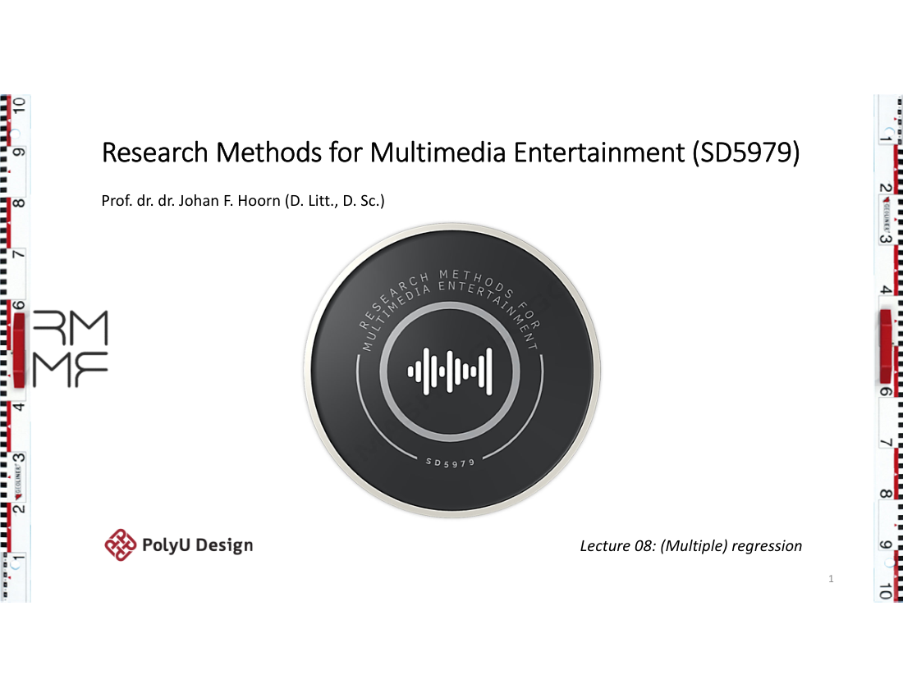
多媒体娱乐研究方法（SD5979）
Prof. dr. dr. Johan F. Hoorn (D. Litt., D. Sc.)
第 08 讲：（多元）回归（(Multiple) regression）
查看英文提取原文
Research Methods for Multimedia Entertainment (SD5979) Prof. dr. dr. Johan F. Hoorn (D. Litt., D. Sc.) Lecture 08: (Multiple) regression 1

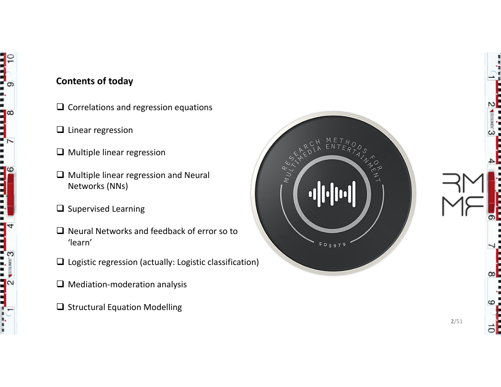
今日内容（Contents of today）
- 相关（Correlations）与回归方程（regression equations）
- 线性回归（Linear regression）
- 多元线性回归（Multiple linear regression）
- 多元线性回归（Multiple linear regression）与神经网络（Neural Networks, NNs）
- 监督学习（Supervised Learning）
- 神经网络（Neural Networks）与误差反馈以便「学习」（feedback of error so to ‘learn’）
- 逻辑回归（Logistic regression）（实际上是：逻辑分类（Logistic classification））
- 中介—调节分析（Mediation-moderation analysis）
- 结构方程建模（Structural Equation Modelling）
查看英文提取原文
Contents of today Correlations and regression equations Linear regression Multiple linear regression Multiple linear regression and Neural Networks (NNs) Supervised Learning Neural Networks and feedback of error so to ‘learn’ Logistic regression (actually: Logistic classification) Mediation-moderation analysis Structural Equation Modelling 2/51

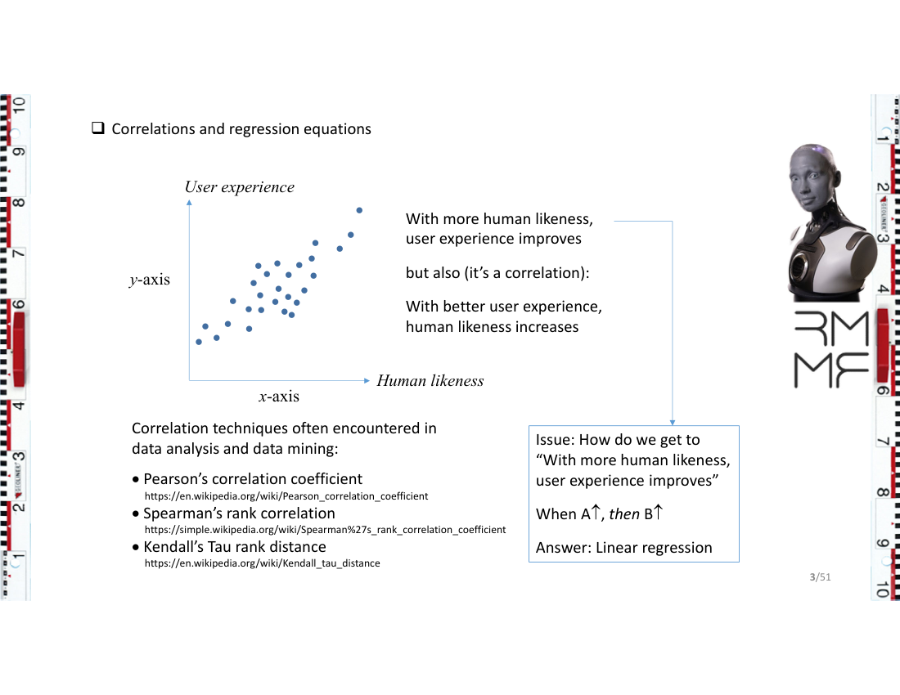
相关（Correlations）与回归方程（regression equations）
数据分析（data analysis）与数据挖掘（data mining）中常见的相关技术（Correlation techniques）：
- 皮尔逊相关系数（Pearson’s correlation coefficient）
https://en.wikipedia.org/wiki/Pearson_correlation_coefficient
- 斯皮尔曼等级相关（Spearman’s rank correlation）
https://simple.wikipedia.org/wiki/Spearman%27s_rank_correlation_coefficient
- 肯德尔 Tau 等级距离（Kendall’s Tau rank distance）
https://en.wikipedia.org/wiki/Kendall_tau_distance
图表标注：
- x 轴（x-axis）：拟人度（Human likeness）
- y 轴（y-axis）：用户体验（User experience）
- 随着拟人度提高，用户体验得到改善，但同时（因为它是一种相关（correlation））：随着用户体验变好，拟人度也随之提高
问题（Issue）： 我们如何得出「随着拟人度提高，用户体验得到改善」（当 A 发生时，则 B 发生 / When A, then B）？
答案（Answer）： 线性回归（Linear regression）
查看英文提取原文
Correlations and regression equations Correlation techniques often encountered in data analysis and data mining: Pearson’s correlation coefficient https://en.wikipedia.org/wiki/Pearson_correlation_coefficient Spearman’s rank correlation https://simple.wikipedia.org/wiki/Spearman%27s_rank_correlation_coefficient Kendall’s Tau rank distance https://en.wikipedia.org/wiki/Kendall_tau_distance x-axis y-axis User experience Human likeness With more human likeness, user experience improves but also (it’s a correlation): With better user experience, human likeness increases Issue: How do we get to “With more human likeness, user experience improves” When A, then B Answer: Linear regression 3/51

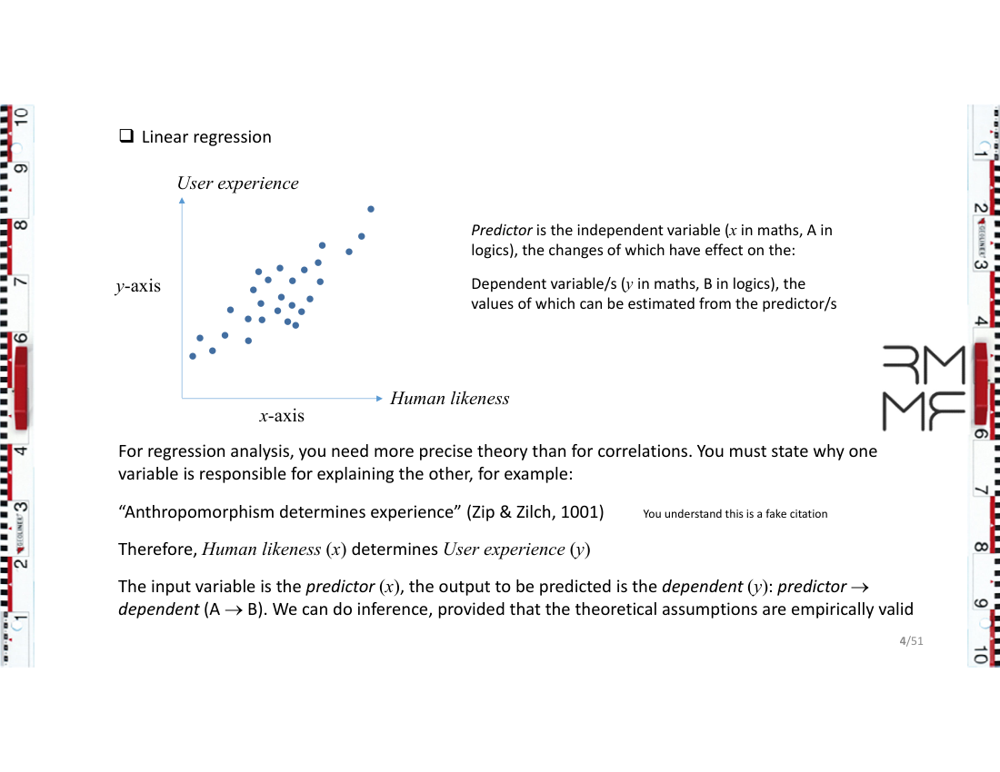
线性回归（Linear regression）
进行回归分析（regression analysis）时，你需要比做相关（correlations）时更精确的理论（theory）。你必须说明为什么一个变量（variable）能够解释另一个变量，例如：
「拟人化（Anthropomorphism）决定体验」（Zip & Zilch, 1001）
（你明白这是一个虚构的引文 / fake citation）
因此，拟人度（x）决定用户体验（y）。
输入变量（input variable）是预测变量（predictor）（x），待预测的输出是因变量（dependent）（y）：预测变量（predictor） → 因变量（dependent）（A → B）。只要理论假设（theoretical assumptions）在实证上有效（empirically valid），我们就可以进行推断（inference）。
图表与图例标注：
- x 轴（x-axis）：拟人度（Human likeness）
- y 轴（y-axis）：用户体验（User experience）
- 预测变量（Predictor）是自变量（independent variable）（在数学中为 x，在逻辑学中为 A），它的变化会影响：
- 因变量（Dependent variable/s）（在数学中为 y，在逻辑学中为 B），其取值可以通过预测变量（predictor/s）来估计。
查看英文提取原文
Linear regression For regression analysis, you need more precise theory than for correlations. You must state why one variable is responsible for explaining the other, for example: “Anthropomorphism determines experience” (Zip & Zilch, 1001) You understand this is a fake citation Therefore, Human likeness (x) determines User experience (y) The input variable is the predictor (x), the output to be predicted is the dependent (y): predictor dependent (A B). We can do inference, provided that the theoretical assumptions are empirically valid x-axis y-axis User experience Human likeness Predictor is the independent variable (x in maths, A in logics), the changes of which have effect on the: Dependent variable/s (y in maths, B in logics), the values of which can be estimated from the predictor/s 4/51

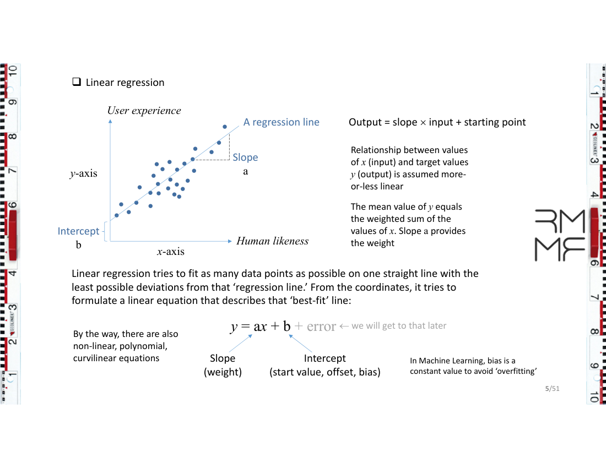
线性回归（Linear regression）
线性回归（Linear regression）试图将尽可能多的数据点拟合到一条直线上，使它们与这条「回归线（regression line）」的偏差（deviations）尽可能小。根据这些坐标点，它试图构建一个描述该「最佳拟合（best-fit）」直线的线性方程（linear equation）：
y = ax + b + 误差（error）
图表标注：
- x 轴（x-axis）：拟人度（Human likeness）
- y 轴（y-axis）：用户体验（User experience）
- 一条回归线（regression line）
- 斜率（Slope）（权重（weight）） / 斜率（Slope） a
- 截距（Intercept）（起始值 start value、偏移量（offset）、偏置（bias）） / 截距（Intercept） b
右侧说明：
- x（输入）的值与目标值 y（输出）之间的关系被假定为大致线性（linear）的
- y 的均值（mean value）等于 x 值的加权和（weighted sum）。斜率（Slope） a 提供权重（weight）
- 顺便一提，还有非线性方程（non-linear）、多项式方程（polynomial）、曲线方程（curvilinear equations），我们稍后会讲到
- 在机器学习（Machine Learning）中，偏置（bias）是一个常数值，用于避免「过拟合（overfitting）」
底部公式：
输出（Output）= 斜率（slope） × 输入（input）+ 起始点（starting point）
查看英文提取原文
Linear regression Linear regression tries to fit as many data points as possible on one straight line with the least possible deviations from that ‘regression line.’ From the coordinates, it tries to formulate a linear equation that describes that ‘best-fit’ line: y = ax + b + error x-axis y-axis User experience Human likeness A regression line Slope (weight) Slope a Intercept (start value, offset, bias) Intercept b Relationship between values of x (input) and target values y (output) is assumed more- or-less linear The mean value of y equals the weighted sum of the values of x. Slope a provides the weight By the way, there are also non-linear, polynomial, curvilinear equations we will get to that later In Machine Learning, bias is a constant value to avoid ‘overfitting’ 5/51 Output = slope input + starting point

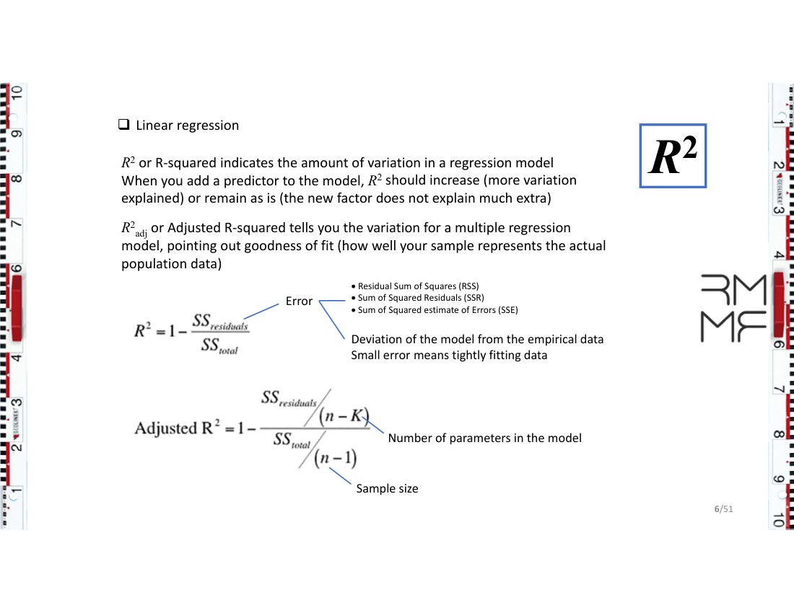
线性回归（Linear regression）
R 平方（R2 or R-squared） 表示回归模型（regression model）中的变异（variation）量
当你向模型中添加一个预测变量（predictor）时，R²（R2） 应当增大（解释了更多变异（variation））或保持不变（新因素未能解释太多额外变异）
调整后 R 平方（R2 adj or Adjusted R-squared） 告诉你多元回归模型（multiple regression model）中的变异（variation），用于指出拟合优度（goodness of fit）（即你的样本（sample）在多大程度上代表了真实的总体数据（population data））
公式与图示标注：
- 误差（Error）
- 残差平方和（Residual Sum of Squares, RSS）
- 残差平方和（Sum of Squared Residuals, SSR）
- 误差平方和（Sum of Squared estimate of Errors, SSE）
- 模型与实证数据（empirical data）之间的偏差（Deviation）
- 较小的误差（error）意味着数据拟合紧密
- 样本量（Sample size）
- 模型中的参数（parameters）数量
查看英文提取原文
R2 Linear regression R2 or R-squared indicates the amount of variation in a regression model When you add a predictor to the model, R2 should increase (more variation explained) or remain as is (the new factor does not explain much extra) R2 adj or Adjusted R-squared tells you the variation for a multiple regression model, pointing out goodness of fit (how well your sample represents the actual population data) Error Residual Sum of Squares (RSS) Sum of Squared Residuals (SSR) Sum of Squared estimate of Errors (SSE) Deviation of the model from the empirical data Small error means tightly fitting data Sample size Number of parameters in the model 6/51

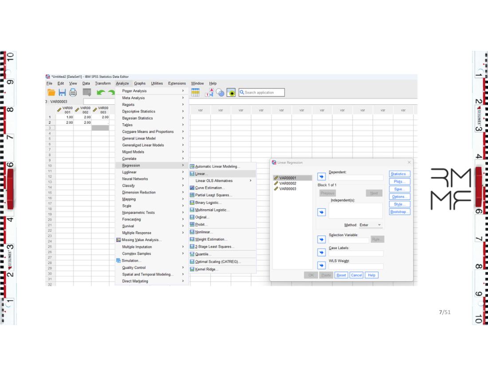
IBM SPSS Statistics 数据编辑器与线性回归（Linear Regression）界面
本页为 SPSS（IBM SPSS Statistics） 数据编辑器（`Untitled2 [DataSet1]）截图，左侧示例数据包含 VAR00001、VAR00002、VAR00003`，演示线性回归的菜单路径与对话框设置：*
- 菜单路径：Analyze（分析）> Regression（回归（Regression））> Linear...（线性（Linear）...）
- Regression 子菜单可见选项：
Automatic Linear Modeling...（自动线性建模）、Linear...（线性（Linear））、Linear OLS Alternatives（线性普通最小二乘（Linear OLS） 备选方法）、Curve Estimation...（曲线估计（Curve Estimation））、Partial Least Squares...（偏最小二乘法（Partial Least Squares））、Binary Logistic...（二元逻辑回归（Binary Logistic））、Multinomial Logistic...（多项逻辑回归（Multinomial Logistic））、Ordinal...（有序回归（Ordinal））、Probit...（概率单位回归（Probit））、Nonlinear...（非线性回归（Nonlinear））、Weight Estimation...（权重估计（Weight Estimation））、2-Stage Least Squares...（二阶段最小二乘法（2-Stage Least Squares））、Quantile...（分位数回归（Quantile））、Optimal Scaling (CATREG)...（最优尺度回归（Optimal Scaling (CATREG)））、Kernel Ridge...（核岭回归（Kernel Ridge））
- Regression 子菜单可见选项：
- 线性回归（Linear Regression） 对话框：
- 左侧变量列表：
VAR00001、VAR00002、VAR00003 Dependent:（因变量（Dependent））Block 1 of 1（第 1 块，共 1 块；含Previous上一块 /Next下一块）下的Independent(s):（自变量（Independent(s)））Method:（方法）：Enter（强迫进入法（Enter））Selection Variable:（选择变量）及Rule...（规则）Case Labels:（个案标签（Case Labels））WLS Weight:（加权最小二乘法权重（WLS Weight））- 右侧按钮：
Statistics...（统计）、Plots...（图形）、Save...（保存）、Options...（选项）、Style...（样式）、Bootstrap...（自助法（Bootstrap）） - 底部按钮：
OK（确定）、Paste（粘贴）、Reset（重置）、Cancel（取消）、Help（帮助）
- 左侧变量列表：
查看英文提取原文
7/51

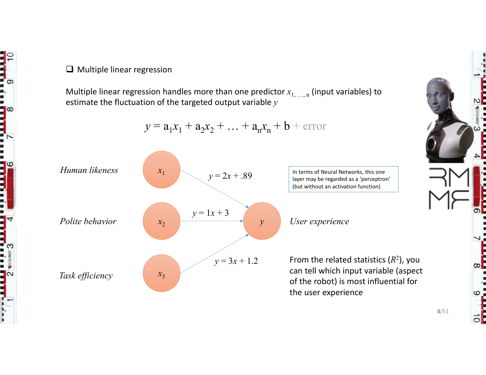
多元线性回归（Multiple linear regression）
多元线性回归（Multiple linear regression）处理多个预测变量（predictor） x1, …, n（输入变量（input variables）），以估计目标输出变量（output variable） y 的波动：
y = a1x1 + a2x2 + … + anxn + b + 误差（error）
网络结构与公式标注：
- x1：拟人度（Human likeness） → y = 2x + .89
- x2：礼貌行为（Polite behavior） → y = 1x + 3
- x3：任务效率（Task efficiency） → y = 3x + 1.2
- y：用户体验（User experience）
右侧说明：
- 从相关的统计量（statistics）（R²（R2））中，你可以判断哪个输入变量（input variable）（机器人的哪个方面）对用户体验的影响最大
- 就神经网络（Neural Networks）而言，这单层结构可以被视为一个「感知机（perceptron）」（但没有激活函数（activation function））
查看英文提取原文
Multiple linear regression Multiple linear regression handles more than one predictor x1, …, n (input variables) to estimate the fluctuation of the targeted output variable y y = a1x1 + a2x2 + … + anxn + b + error x1 x2 x3 y User experience Human likeness Polite behavior Task efficiency y = 2x + .89 y = 1x + 3 y = 3x + 1.2 From the related statistics (R2), you can tell which input variable (aspect of the robot) is most influential for the user experience In terms of Neural Networks, this one layer may be regarded as a ‘perceptron’ (but without an activation function) 8/51

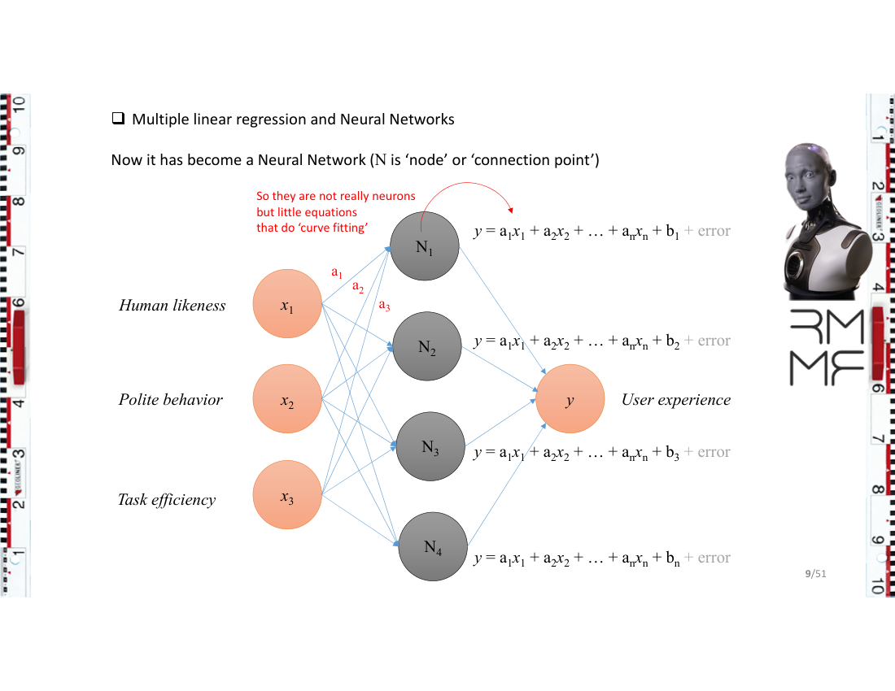
多元线性回归（Multiple linear regression）与神经网络（Neural Networks）
现在它变成了一个神经网络（Neural Network）（N 代表「节点（node）」或「连接点（connection point）」）
网络结构与公式标注：
- 输入变量：x1 拟人度（Human likeness）、x2 礼貌行为（Polite behavior）、x3 任务效率（Task efficiency）
- 权重（Weights）：a1、a2、a3
- 节点（Nodes）：N1、N2、N3、N4
- y = a1x1 + a2x2 + … + anxn + b1 + 误差（error）
- y = a1x1 + a2x2 + … + anxn + b2 + 误差（error）
- y = a1x1 + a2x2 + … + anxn + b3 + 误差（error）
- y = a1x1 + a2x2 + … + anxn + bn + 误差（error）
- 输出：y 用户体验（User experience）
底部说明：
- 因此，它们实际上并不是真正的神经元，而是做「曲线拟合（curve fitting）」的小方程
查看英文提取原文
Multiple linear regression and Neural Networks Now it has become a Neural Network (N is ‘node’ or ‘connection point’) x1 x2 x3 y User experience N1 N2 N3 N4 y = a1x1 + a2x2 + … + anxn + b1 + error y = a1x1 + a2x2 + … + anxn + bn + error y = a1x1 + a2x2 + … + anxn + b2 + error y = a1x1 + a2x2 + … + anxn + b3 + error So they are not really neurons but little equations that do ‘curve fitting’ a1 a2 a3 Human likeness Polite behavior Task efficiency 9/51

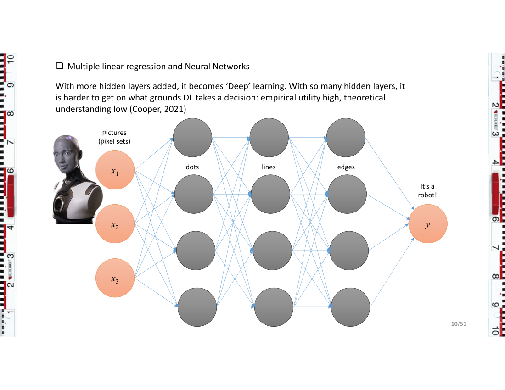
多元线性回归（Multiple linear regression）与神经网络（Neural Networks）
随着添加更多的隐藏层（hidden layers），它就变成了「深度学习（‘Deep’ learning）」。由于隐藏层（hidden layers）如此之多，很难弄清楚深度学习（DL）是依据什么做出决策的：实证效用（empirical utility）高，理论理解（theoretical understanding）低（Cooper, 2021）
网络层级标注：
- 输入（x1、x2、x3）：图片（像素集合）（pictures (pixel sets)）
- 中间特征层级：点（dots）→ 线（lines）→ 边缘（edges）
- 输出（y）：「这是一个机器人！」（It’s a robot!）
查看英文提取原文
Multiple linear regression and Neural Networks With more hidden layers added, it becomes ‘Deep’ learning. With so many hidden layers, it is harder to get on what grounds DL takes a decision: empirical utility high, theoretical understanding low (Cooper, 2021) x1 x2 x3 y dots lines edges It’s a robot! pictures (pixel sets) 10/51

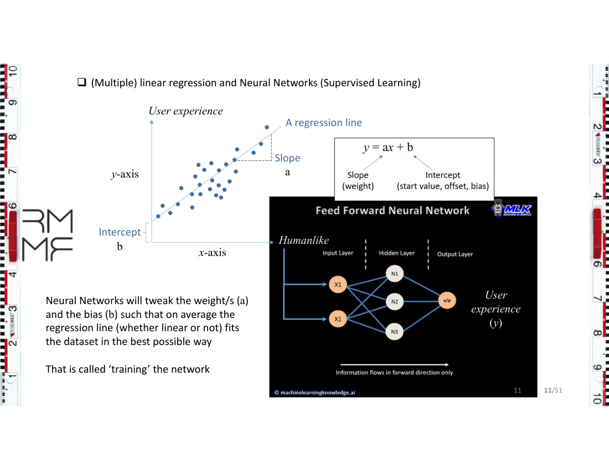
（多元）线性回归（(Multiple) linear regression）与神经网络（Neural Networks）（监督学习（Supervised Learning））
图表标注：
- x 轴（x-axis）：VR / 拟人化（Humanlike）
- y 轴（y-axis）：用户体验（User experience）
- 一条回归线（regression line）
- 斜率（Slope） a
- 截距（Intercept） b
- 右侧方程标注：y = ax + b、y = ax + b、y = ax + b
- 底部标注：用户体验 (y)（User experience (y)）
右侧说明：
- 神经网络（Neural Networks）会微调权重（weight/s）（a）和偏置（bias）（b），使得平均而言这条回归线（regression line）（无论是否为线性）以最佳方式拟合数据集（dataset）
- 这被称为「训练（‘training’）」网络
查看英文提取原文
11 (Multiple) linear regression and Neural Networks (Supervised Learning) x-axis y-axis User experience VR A regression line Slope a Intercept b Neural Networks will tweak the weight/s (a) and the bias (b) such that on average the regression line (whether linear or not) fits the dataset in the best possible way That is called ‘training’ the network y = ax + b y = ax + b y = ax + b 11 Humanlike User experience (y) 11/51

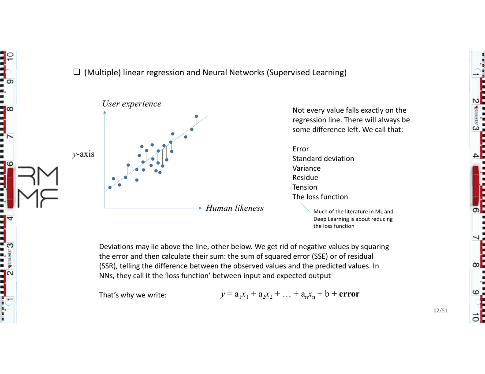
（多元）线性回归（(Multiple) linear regression）与神经网络（Neural Networks）（监督学习（Supervised Learning））
图表标注：
- y 轴（y-axis）：用户体验（User experience）
- x 轴：VR / 拟人度（Human likeness）
说明文字：
并非每个值都会恰好落在回归线（regression line）上。总会剩下一些差异。我们称之为：
- 误差（Error）
- 标准差（Standard deviation）
- 方差（Variance）
- 残差（Residue）
- 张力（Tension）
- 损失函数（The loss function）
偏差（Deviations）可能位于回归线上方，也可能位于下方。我们通过对误差（error）进行平方来消除负值，然后计算它们的总和：误差平方和（sum of squared error, SSE） 或残差平方和（sum of residual, SSR），用以说明观测值（observed values）与预测值（predicted values）之间的差异。在神经网络（NNs）中，人们称之为输入与预期输出之间的「损失函数（loss function）」
这就是为什么我们写作：
y = a1x1 + a2x2 + … + anxn + b + 误差（error）
机器学习（ML）和深度学习（Deep Learning）中的大量文献都是在研究如何减小损失函数（loss function）
查看英文提取原文
(Multiple) linear regression and Neural Networks (Supervised Learning) y-axis User experience VR Human likeness Not every value falls exactly on the regression line. There will always be some difference left. We call that: Error Standard deviation Variance Residue Tension The loss function Deviations may lie above the line, other below. We get rid of negative values by squaring the error and then calculate their sum: the sum of squared error (SSE) or of residual (SSR), telling the difference between the observed values and the predicted values. In NNs, they call it the ‘loss function’ between input and expected output That’s why we write: y = a1x1 + a2x2 + … + anxn + b + error Much of the literature in ML and Deep Learning is about reducing the loss function 12/51

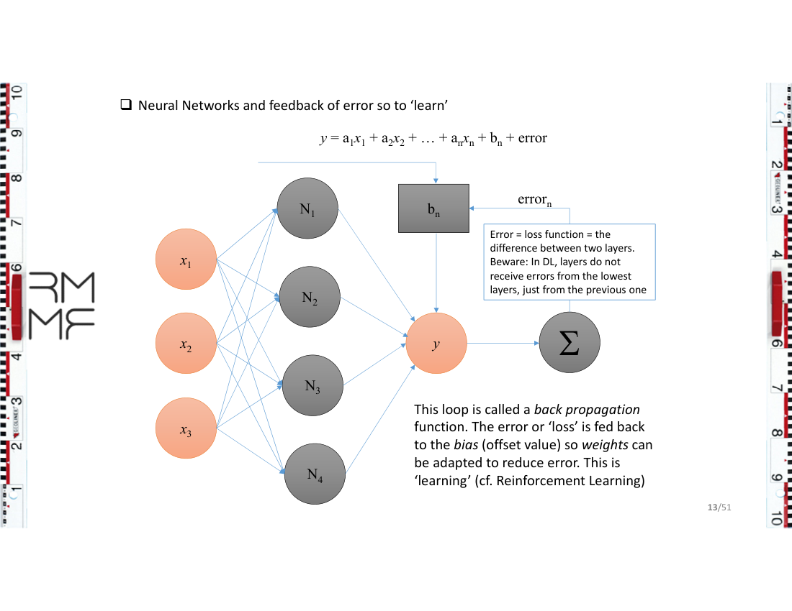
神经网络（Neural Networks）与用于「学习（‘learn’）」的误差反馈（feedback of error）
公式与图示标注：
- 输入节点：
x1、x2、x3 - 输出节点：
y - 神经元／节点：
N1、N2、N3、N4 - 方程：
y = a1x1 + a2x2 + … + anxn + bn + error - 图示要素：偏置（bn）、
Σ（求和）、误差（errorn）
这个循环被称为反向传播函数（back propagation function）。误差（error）或「损失（‘loss’）」会反馈给偏置（bias）（偏移值），从而调整权重（weights）以减少误差。这就是「学习（‘learning’）」（参见强化学习（Reinforcement Learning））。
- 误差（Error） = 损失函数（loss function） = 两层（layers）之间的差异。
- 注意：在深度学习（DL）中，各层（layers）不会接收来自最底层的误差，而只接收来自上一层的误差。
查看英文提取原文
Neural Networks and feedback of error so to ‘learn’ x1 x2 x3 y N1 N2 N3 N4 y = a1x1 + a2x2 + … + anxn + bn + error bn errorn This loop is called a back propagation function. The error or ‘loss’ is fed back to the bias (offset value) so weights can be adapted to reduce error. This is ‘learning’ (cf. Reinforcement Learning) Error = loss function = the difference between two layers. Beware: In DL, layers do not receive errors from the lowest layers, just from the previous one 13/51

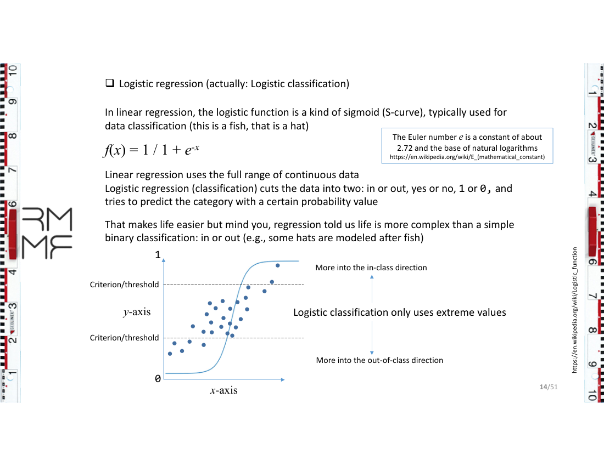
逻辑回归（Logistic regression）（实际上是：逻辑分类（Logistic classification））
在线性回归（linear regression）中，逻辑函数（logistic function）是一种S型曲线（sigmoid (S-curve)），通常用于数据分类（data classification）（这是一条鱼，那是一顶帽子）。
f(x) = 1 / 1 + e-x
- 线性回归（Linear regression）使用连续数据（continuous data）的完整取值范围。
- 逻辑回归（Logistic regression）（分类（classification））将数据切分为两部分：属于或不属于、是或否、1 或 0，并尝试以一定的概率值（probability value）来预测所属类别。
- 这让事情变得更容易，但请记住，回归分析曾告诉我们，现实比简单的二元分类（binary classification）（属于或不属于）更复杂（例如，有些帽子是仿照鱼的造型设计的）。
参考链接：https://en.wikipedia.org/wiki/Logistic_function
欧拉数 e（Euler number e）是一个约为 2.72 的常数，也是自然对数（natural logarithms）的底数。
参考链接：https://en.wikipedia.org/wiki/E_(mathematical_constant)
坐标轴与图示说明：
- 横轴：x轴（x-axis）
- 纵轴：y轴（y-axis）
•：数据点分布- 趋向类内方向（More into the in-class direction）
- 趋向类外方向（More into the out-of-class direction）
- 逻辑分类（Logistic classification）只使用极值（extreme values）（
0与1） - 判别线标注：判别标准／阈值（Criterion/threshold）
查看英文提取原文
Logistic regression (actually: Logistic classification) In linear regression, the logistic function is a kind of sigmoid (S-curve), typically used for data classification (this is a fish, that is a hat) f(x) = 1 / 1 + e-x Linear regression uses the full range of continuous data Logistic regression (classification) cuts the data into two: in or out, yes or no, 1 or 0, and tries to predict the category with a certain probability value That makes life easier but mind you, regression told us life is more complex than a simple binary classification: in or out (e.g., some hats are modeled after fish) https://en.wikipedia.org/wiki/Logistic_function The Euler number e is a constant of about 2.72 and the base of natural logarithms https://en.wikipedia.org/wiki/E_(mathematical_constant) x-axis y-axis More into the in-class direction More into the out-of-class direction Logistic classification only uses extreme values 0 1 Criterion/threshold Criterion/threshold 14/51

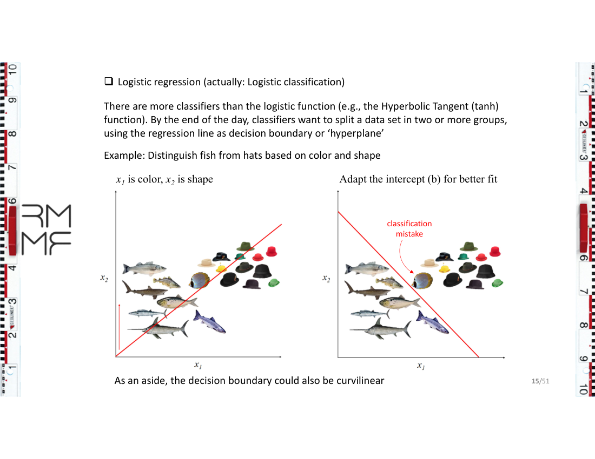
逻辑回归（Logistic regression）（实际上是：逻辑分类（Logistic classification））
图示顶部说明：
x1是颜色（color），x2是形状（shape）- 调整截距（intercept (b)）以获得更好的拟合（fit）
除了逻辑函数（logistic function）之外，还有其他分类器（classifiers）（例如双曲正切函数（Hyperbolic Tangent (tanh) function））。归根结底，分类器（classifiers）的目的是利用回归线（regression line）作为决策边界（decision boundary）或「超平面（‘hyperplane’）」，将一个数据集（data set）划分为两组或多组。
- 示例：根据颜色和形状区分鱼（fish）和帽子（hats）。
- 顺便一提，决策边界（decision boundary）也可以是曲线的（curvilinear）。
图示标注：
- 分类错误（classification mistake）
查看英文提取原文
x1 is color, x2 is shape Adapt the intercept (b) for better fit Logistic regression (actually: Logistic classification) There are more classifiers than the logistic function (e.g., the Hyperbolic Tangent (tanh) function). By the end of the day, classifiers want to split a data set in two or more groups, using the regression line as decision boundary or ‘hyperplane’ Example: Distinguish fish from hats based on color and shape As an aside, the decision boundary could also be curvilinear classification mistake 15/51

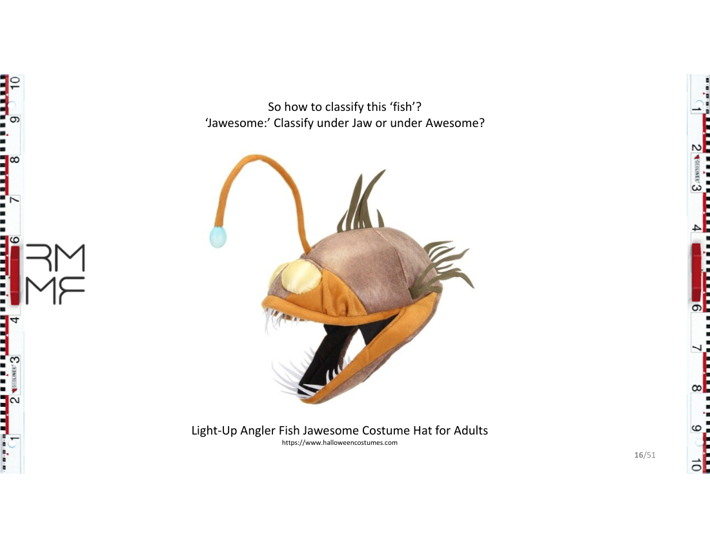
那么该如何对这条「鱼」进行分类（classify）？
「Jawesome」：应该归类在 Jaw（下颚）还是 Awesome（超赞）之下？
Light-Up Angler Fish Jawesome Costume Hat for Adults（成人发光鮟鱇鱼「Jawesome」造型帽）
https://www.halloweencostumes.com
查看英文提取原文
So how to classify this ‘fish’? ‘Jawesome:’ Classify under Jaw or under Awesome? Light-Up Angler Fish Jawesome Costume Hat for Adults https://www.halloweencostumes.com 16/51

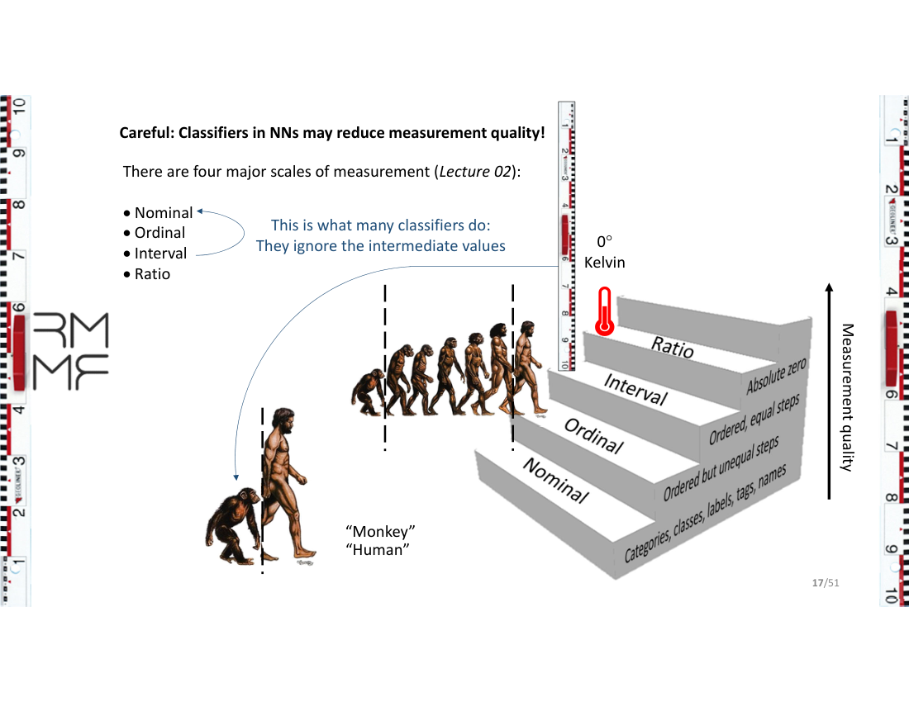
测量质量（Measurement quality）
注意（Careful）：神经网络（NNs）中的分类器（Classifiers）可能会降低测量质量（measurement quality）！
图示示例：
0开尔文（Kelvin）- 「Monkey」（猴子） / 「Human」（人类）
有四种主要的测量尺度（scales of measurement）（第 02 讲 / Lecture 02）：
- 定类尺度／名义尺度（Nominal）
- 定序尺度／顺序尺度（Ordinal）
- 定距尺度／等距尺度（Interval）
- 定比尺度／比率尺度（Ratio）
这就是许多分类器（classifiers）所做的事情：它们忽略了中间值（intermediate values）。
查看英文提取原文
0 Kelvin Measurement quality Careful: Classifiers in NNs may reduce measurement quality! “Monkey” “Human” There are four major scales of measurement (Lecture 02): Nominal Ordinal Interval Ratio This is what many classifiers do: They ignore the intermediate values 17/51

课间休息（Break）
查看英文提取原文
Break

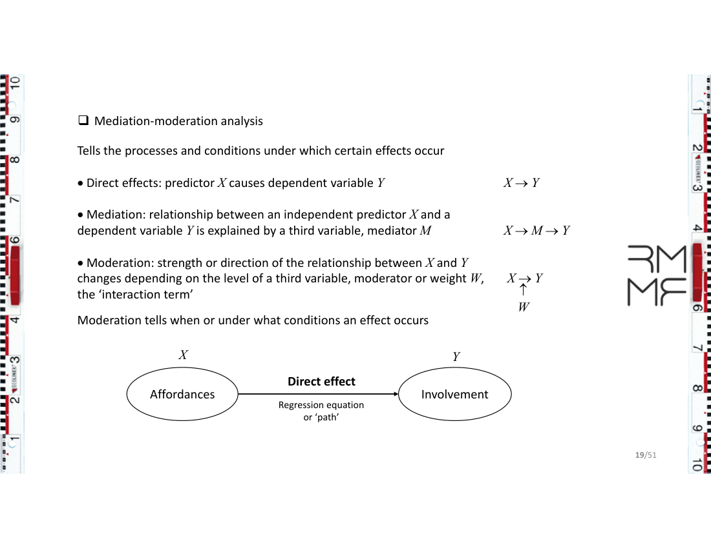
中介—调节分析（Mediation-moderation analysis）
说明特定效应（effects）发生的过程与条件
- 直接效应（Direct effects）：预测变量（predictor X） 导致因变量（dependent variable Y）
X → Y
- 中介作用（Mediation）：独立预测变量（independent predictor X） 与因变量（dependent variable Y） 之间的关系，由第三个变量——中介变量（mediator M） 来解释
X → M → Y
- 调节作用（Moderation）：
X与Y之间关系的强度或方向，会随着第三个变量——调节变量（moderator） 或权重（weight W）（即「交互项（‘interaction term’）」）的水平而发生变化X → Y（受W调节）- 调节作用（Moderation）说明某项效应（effect）在何时或何种条件下发生
图示标注：
- 变量：
X（Affordances，可供性）、Y（Involvement，卷入度）、W - 直接效应（Direct effect）
- 回归方程（Regression equation） 或「路径（‘path’）」
查看英文提取原文
Mediation-moderation analysis Tells the processes and conditions under which certain effects occur Direct effects: predictor X causes dependent variable Y X Y Mediation: relationship between an independent predictor X and a dependent variable Y is explained by a third variable, mediator M X M Y Moderation: strength or direction of the relationship between X and Y changes depending on the level of a third variable, moderator or weight W, X Y the ‘interaction term’ Moderation tells when or under what conditions an effect occurs W Direct effect Regression equation or ‘path’ Affordances Involvement Y X 19/51

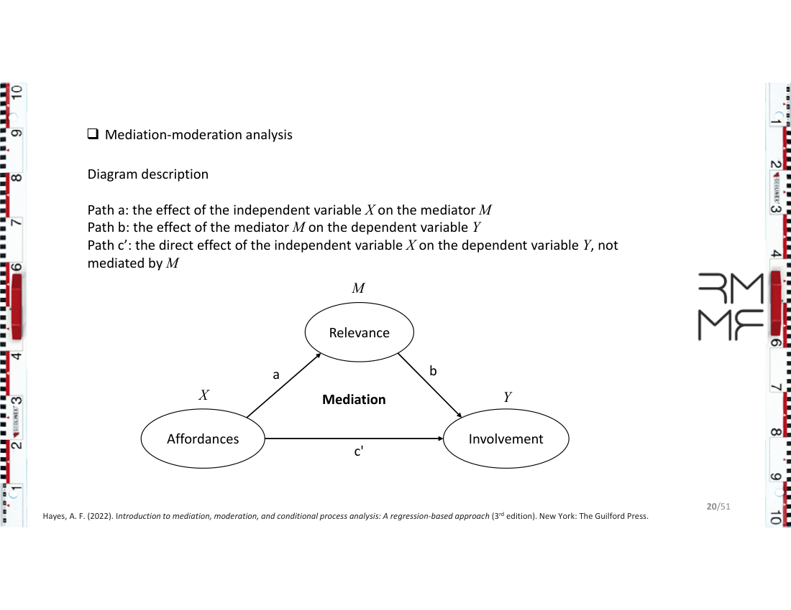
中介—调节分析（Mediation-moderation analysis）
图示说明（Diagram description）：
- 路径 a（Path a）：自变量（independent variable X） 对中介变量（mediator M） 的效应（effect）
- 路径 b（Path b）：中介变量（mediator M） 对因变量（dependent variable Y） 的效应（effect）
- 路径 c’（Path c’）：自变量（independent variable X） 对因变量（dependent variable Y） 未经
M中介（mediated）的直接效应（direct effect）
模型图示标注：
X：Affordances（可供性）Y：Involvement（卷入度）M：Relevance（相关性）- 路径：
a、b、c' - 模型类型：中介模型（Mediation）
参考文献：
Hayes, A. F. (2022). Introduction to mediation, moderation, and conditional process analysis: A regression-based approach (3rd edition). New York: The Guilford Press.
查看英文提取原文
Mediation-moderation analysis Diagram description Path a: the effect of the independent variable X on the mediator M Path b: the effect of the mediator M on the dependent variable Y Path c’: the direct effect of the independent variable X on the dependent variable Y, not mediated by M Affordances Involvement X Y Relevance M a b c' Mediation Hayes, A. F. (2022). Introduction to mediation, moderation, and conditional process analysis: A regression-based approach (3rd edition). New York: The Guilford Press. 20/51

中介—调节分析（Mediation-moderation analysis）
图示说明（Diagram description）：
- 路径 a（Path a）：自变量（independent variable X） 对中介变量（mediator M） 的效应（effect）（例如，
决定系数（R2） = .59） - 路径 b（Path b）：中介变量（mediator M） 对因变量（dependent variable Y） 的效应（effect）（例如，
决定系数（R2） = .40） - 路径 c’（Path c’）：自变量（independent variable X） 对因变量（dependent variable Y） 未经
M中介（mediated）的直接效应（direct effect）（例如，决定系数（R2） = .01）
模型图示标注：
X：Affordances（可供性）Y：Involvement（卷入度）M：Relevance（相关性）- 路径：
a、b - 模型类型：完全中介（Full mediation）
参考文献：
Hayes, A. F. (2022). Introduction to mediation, moderation, and conditional process analysis: A regression-based approach (3rd edition). New York: The Guilford Press.
查看英文提取原文
Mediation-moderation analysis Diagram description Path a: the effect of the independent variable X on the mediator M (e.g., R2 = .59) Path b: the effect of the mediator M on the dependent variable Y (e.g., R2 = .40) Path c’: the direct effect of the independent variable X on the dependent variable Y, not mediated by M (e.g., R2 = .01) Affordances Involvement X Y Relevance M a b Full mediation Hayes, A. F. (2022). Introduction to mediation, moderation, and conditional process analysis: A regression-based approach (3rd edition). New York: The Guilford Press. 21/51

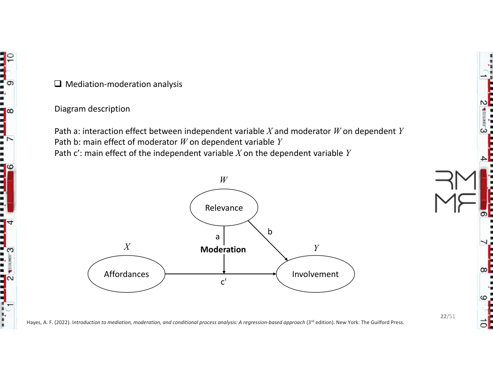
中介—调节分析（Mediation-moderation analysis）
图示说明（Diagram description）：
- 路径 a（Path a）：自变量（independent variable X） 与调节变量（moderator W） 对因变量（dependent Y） 的交互效应（interaction effect）
- 路径 b（Path b）：调节变量（moderator W） 对因变量（dependent variable Y） 的主效应（main effect）
- 路径 c’（Path c’）：自变量（independent variable X） 对因变量（dependent variable Y） 的主效应（main effect）
模型图示标注：
X：Affordances（可供性）Y：Involvement（卷入度）W：Relevance（相关性）- 路径：
a、b、c' - 模型类型：调节模型（Moderation）
参考文献：
Hayes, A. F. (2022). Introduction to mediation, moderation, and conditional process analysis: A regression-based approach (3rd edition). New York: The Guilford Press.
查看英文提取原文
Mediation-moderation analysis Diagram description Path a: interaction effect between independent variable X and moderator W on dependent Y Path b: main effect of moderator W on dependent variable Y Path c’: main effect of the independent variable X on the dependent variable Y Affordances Involvement X Y Relevance W a b c' Moderation Hayes, A. F. (2022). Introduction to mediation, moderation, and conditional process analysis: A regression-based approach (3rd edition). New York: The Guilford Press. 22/51

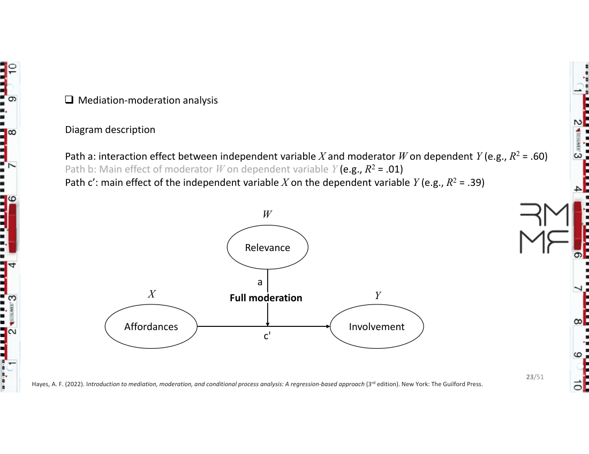
中介—调节分析（Mediation-moderation analysis）
图示说明（Diagram description）：
- 路径 a（Path a）：自变量（independent variable X） 与调节变量（moderator W） 对因变量（dependent Y） 的交互效应（interaction effect）（例如，
决定系数（R2） = .60） - 路径 b（Path b）：调节变量（moderator W） 对因变量（dependent variable Y） 的主效应（Main effect）（例如，
决定系数（R2） = .01） - 路径 c’（Path c’）：自变量（independent variable X） 对因变量（dependent variable Y） 的主效应（main effect）（例如，
决定系数（R2） = .39）
模型图示标注：
X：Affordances（可供性）Y：Involvement（卷入度）W：Relevance（相关性）- 路径：
a、c' - 模型类型：完全调节（Full moderation）
参考文献：
Hayes, A. F. (2022). Introduction to mediation, moderation, and conditional process analysis: A regression-based approach (3rd edition). New York: The Guilford Press.
查看英文提取原文
Mediation-moderation analysis Diagram description Path a: interaction effect between independent variable X and moderator W on dependent Y (e.g., R2 = .60) Path b: Main effect of moderator W on dependent variable Y (e.g., R2 = .01) Path c’: main effect of the independent variable X on the dependent variable Y (e.g., R2 = .39) Affordances Involvement X Y Relevance W a c' Full moderation Hayes, A. F. (2022). Introduction to mediation, moderation, and conditional process analysis: A regression-based approach (3rd edition). New York: The Guilford Press. 23/51

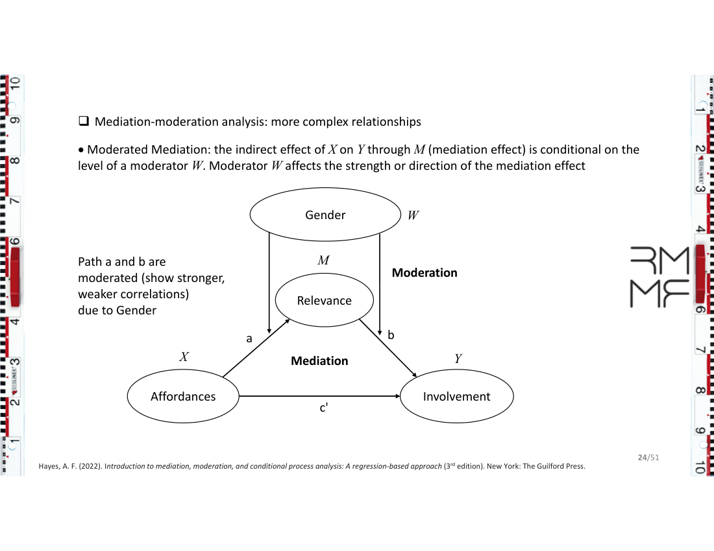
中介—调节分析（Mediation-moderation analysis）：更复杂的关系
- 有调节的中介（Moderated Mediation）：
X通过M对Y产生的间接效应（indirect effect）（即中介效应（mediation effect））取决于调节变量（moderator W） 的水平。调节变量（Moderator W） 会影响中介效应（mediation effect）的强度或方向。
图示标注：
- 由于性别（Gender）的影响，路径
a和路径b受到调节（moderated）（表现出更强或更弱的相关（correlations）） X：Affordances（可供性）Y：Involvement（卷入度）M：Relevance（相关性）W：Gender（性别）- 路径：
a、b、c' - 模型标注：中介模型（Mediation）、调节模型（Moderation）
参考文献：
Hayes, A. F. (2022). Introduction to mediation, moderation, and conditional process analysis: A regression-based approach (3rd edition). New York: The Guilford Press.
查看英文提取原文
Moderated Mediation: the indirect effect of X on Y through M (mediation effect) is conditional on the level of a moderator W. Moderator W affects the strength or direction of the mediation effect Path a and b are moderated (show stronger, weaker correlations) due to Gender Mediation-moderation analysis: more complex relationships Affordances Involvement X Y Relevance M a b c' Mediation Gender W Moderation Hayes, A. F. (2022). Introduction to mediation, moderation, and conditional process analysis: A regression-based approach (3rd edition). New York: The Guilford Press. 24/51

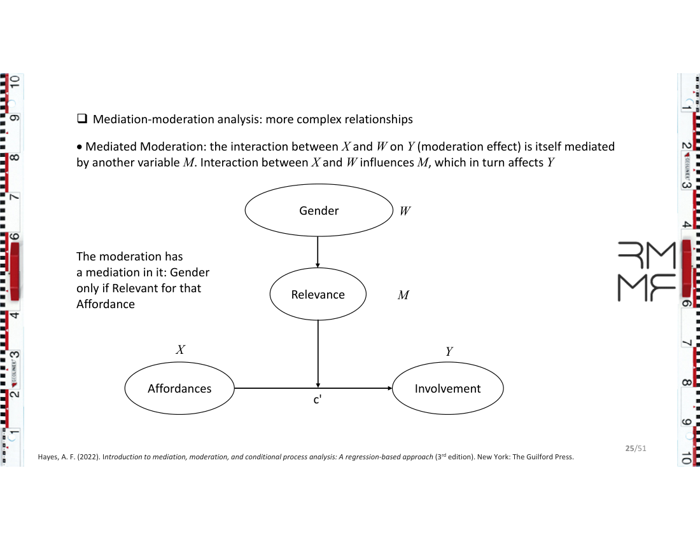
中介—调节分析（Mediation-moderation analysis）：更复杂的关系
- 有中介的调节（Mediated Moderation）：
X与W对Y的交互作用（interaction）（即调节效应（moderation effect））本身又被另一个变量M所中介（mediated）。X与W之间的交互作用（Interaction）影响M，而M进而影响Y。
图示标注：
- 该调节作用（moderation）内部包含一个中介作用（mediation）：性别（Gender）仅在与该可供性（Affordance）相关（Relevant）时才起作用
X：Affordances（可供性）Y：Involvement（卷入度）M：Relevance（相关性）W：Gender（性别）- 路径：
c'
参考文献：
Hayes, A. F. (2022). Introduction to mediation, moderation, and conditional process analysis: A regression-based approach (3rd edition). New York: The Guilford Press.
查看英文提取原文
Mediated Moderation: the interaction between X and W on Y (moderation effect) is itself mediated by another variable M. Interaction between X and W influences M, which in turn affects Y The moderation has a mediation in it: Gender only if Relevant for that Affordance Mediation-moderation analysis: more complex relationships Affordances Involvement X Y Relevance M c' Gender W Hayes, A. F. (2022). Introduction to mediation, moderation, and conditional process analysis: A regression-based approach (3rd edition). New York: The Guilford Press. 25/51

考试样题：开放式问题（Open-ended question）（类别：应用 Application）
本题涉及第 08 讲：多元回归（(Multiple) regression）。假设你正在研究一款 VR 健康应用 X 对用户体验 Y 的效应（effect），并且你推测这一效应（effect）是由增加的健康知识 M 所中介（mediated）的。此外，你认为用户如何体验该应用，还可能取决于用户追求健康生活的动机水平 W。
请描述以下模型的路径（path）：
A. 中介效应（Mediation）：
B. 调节效应（Moderation）：
C. 有调节的中介（Moderated Mediation）：
D. 有中介的调节（Mediated Moderation）：
- 配图说明：Oakwood Medical Avatar（3-D 健康自拍 / 3-D Healthy Selfie）
查看英文提取原文
Exam sample item, Open-ended question, Category “Application” This question pertains to Lecture 08 (Multiple) regression. Imagine you are studying the effect of a VR health app X on user experience Y, and you suspect that this effect is mediated by increased health knowledge M. Additionally, you think that how the app is experienced might also depend on the level of user motivation W to live healthily Describe the path for: A. Mediation: B. Moderation: C. Moderated Mediation: D. Mediated Moderation: Oakwood Medical Avatar (3-D Healthy Selfie) 26/51

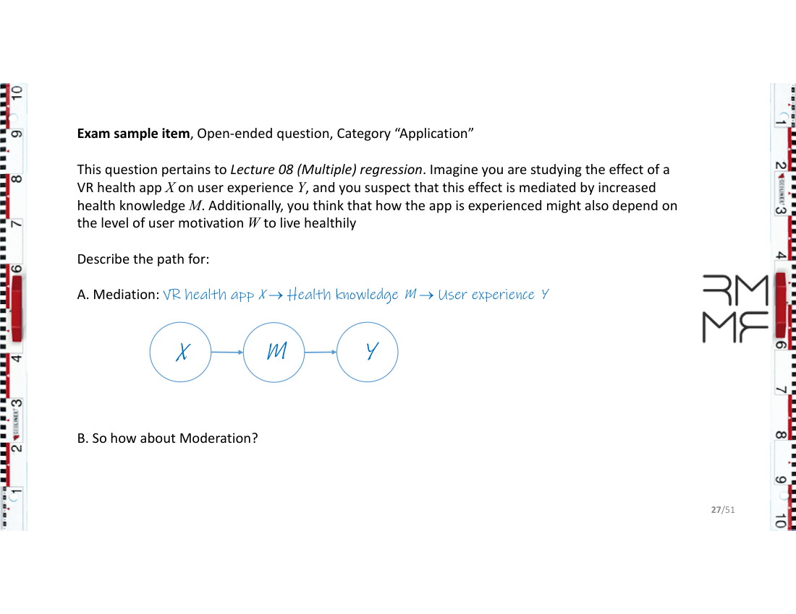
考试样题：开放式问题（Open-ended question）（类别：应用 Application）
本题涉及第 08 讲：多元回归（(Multiple) regression）。假设你正在研究一款 VR 健康应用 X 对用户体验 Y 的效应（effect），并且你推测这一效应（effect）是由增加的健康知识 M 所中介（mediated）的。此外，你认为用户如何体验该应用，还可能取决于用户追求健康生活的动机水平 W。
请描述以下模型的路径（path）：
A. 中介效应（Mediation）：VR 健康应用 X → 健康知识 M → 用户体验 Y
- 图示变量（variables）：
X、M、Y
B. 那么调节效应（Moderation）呢？
查看英文提取原文
Exam sample item, Open-ended question, Category “Application” This question pertains to Lecture 08 (Multiple) regression. Imagine you are studying the effect of a VR health app X on user experience Y, and you suspect that this effect is mediated by increased health knowledge M. Additionally, you think that how the app is experienced might also depend on the level of user motivation W to live healthily Describe the path for: A. Mediation: VR health app X Health knowledge M User experience Y 27/51 X M Y B. So how about Moderation?

考试样题：开放式问题（Open-ended question）（类别：应用 Application）
本题涉及第 08 讲：多元回归（(Multiple) regression）。假设你正在研究一款 VR 健康应用 X 对用户体验 Y 的效应（effect），并且你推测这一效应（effect）是由增加的健康知识 M 所中介（mediated）的。此外，你认为用户如何体验该应用，还可能取决于用户追求健康生活的动机水平 W。
请描述以下模型的路径（path）：
B. 调节效应（Moderation）：VR 健康应用 X 对用户体验 Y 的效应（effect）取决于用户动机 W
- 图示变量（variables）：
X、Y、W
C. 有调节的中介（Moderated Mediation）：
查看英文提取原文
Exam sample item, Open-ended question, Category “Application” This question pertains to Lecture 08 (Multiple) regression. Imagine you are studying the effect of a VR health app X on user experience Y, and you suspect that this effect is mediated by increased health knowledge M. Additionally, you think that how the app is experienced might also depend on the level of user motivation W to live healthily Describe the path for: B. Moderation: The effect of the VR health app X on User experience Y depends on User motivation W 28/51 X Y W C. Moderated Mediation:

考试样题：开放式问题（Open-ended question）（类别：应用 Application）
本题涉及第 08 讲：多元回归（(Multiple) regression）。假设你正在研究一款 VR 健康应用 X 对用户体验 Y 的效应（effect），并且你推测这一效应（effect）是由增加的健康知识 M 所中介（mediated）的。此外，你认为用户如何体验该应用，还可能取决于用户追求健康生活的动机水平 W。
请描述以下模型的路径（path）：
C. 有调节的中介（Moderated Mediation）：健康知识 M 在 VR 健康应用 X 与用户体验 Y 之间关系上的中介效应（mediation effect），取决于用户动机 W
- 图示变量（variables）：
X、M、Y、W
D. 有中介的调节（Mediated Moderation）：
查看英文提取原文
Exam sample item, Open-ended question, Category “Application” This question pertains to Lecture 08 (Multiple) regression. Imagine you are studying the effect of a VR health app X on user experience Y, and you suspect that this effect is mediated by increased health knowledge M. Additionally, you think that how the app is experienced might also depend on the level of user motivation W to live healthily Describe the path for: C. Moderated Mediation: The mediation effect of Health knowledge M on the relationship between the VR health app X and User experience Y depends on user motivation W 29/51 X M Y W D. Mediated Moderation:

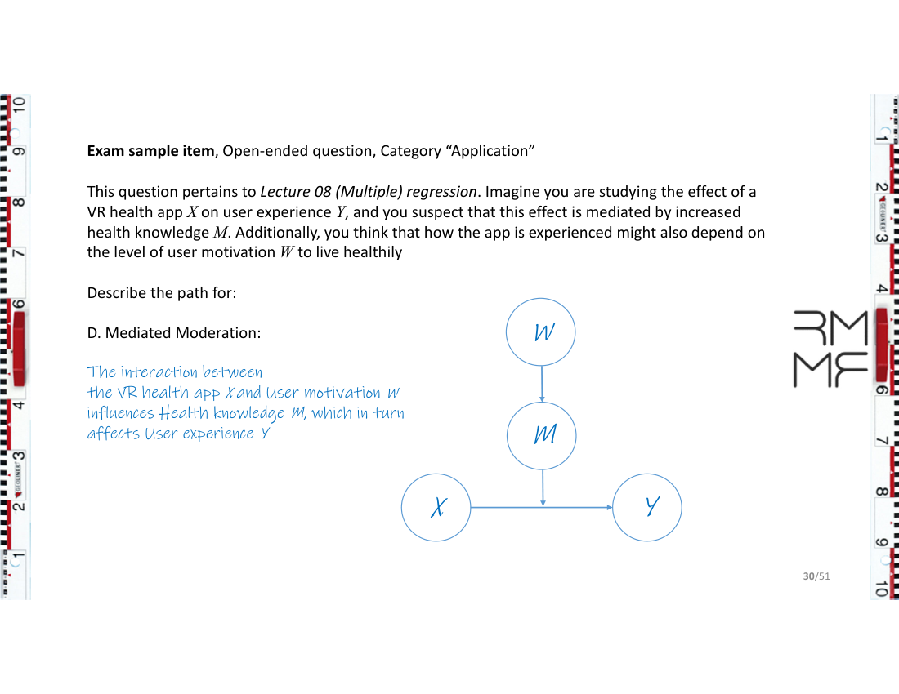
考试样题：开放式问题（Open-ended question）（类别：应用 Application）
本题涉及第 08 讲：多元回归（(Multiple) regression）。假设你正在研究一款 VR 健康应用 X 对用户体验 Y 的效应（effect），并且你推测这一效应（effect）是由增加的健康知识 M 所中介（mediated）的。此外，你认为用户如何体验该应用，还可能取决于用户追求健康生活的动机水平 W。
请描述以下模型的路径（path）：
D. 有中介的调节（Mediated Moderation）：VR 健康应用 X 与用户动机 W 之间的交互作用（interaction）影响了健康知识 M，而健康知识 M 进而影响用户体验 Y
- 图示变量（variables）：
X、Y、M、W
查看英文提取原文
Exam sample item, Open-ended question, Category “Application” This question pertains to Lecture 08 (Multiple) regression. Imagine you are studying the effect of a VR health app X on user experience Y, and you suspect that this effect is mediated by increased health knowledge M. Additionally, you think that how the app is experienced might also depend on the level of user motivation W to live healthily Describe the path for: D. Mediated Moderation: The interaction between the VR health app X and User motivation W influences Health knowledge M, which in turn affects User experience Y 30/51 X Y M W

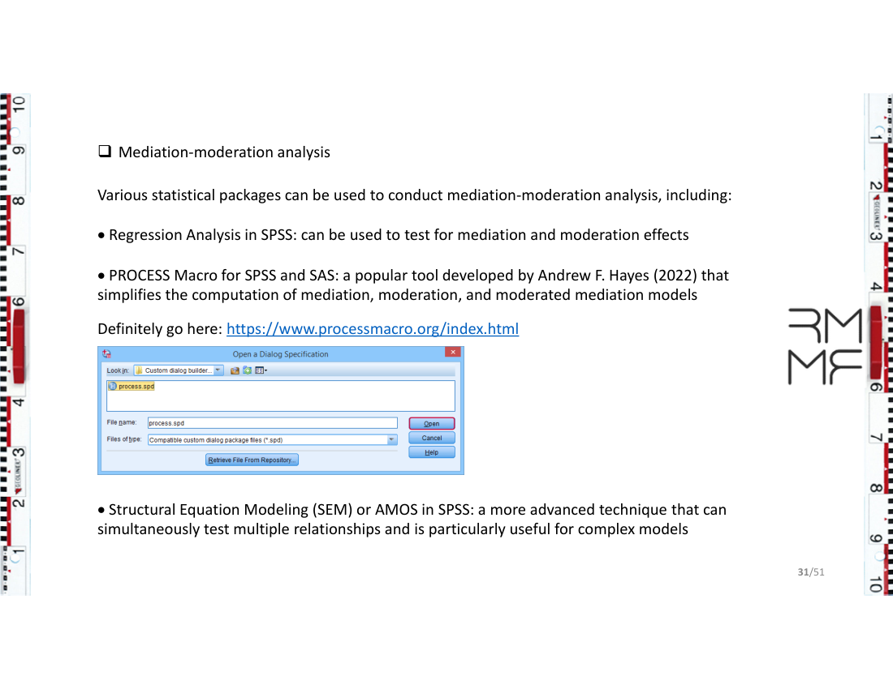
中介—调节分析（Mediation-moderation analysis）
可以使用多种统计软件包（statistical packages）来进行中介—调节分析（mediation-moderation analysis），包括：
- SPSS 中的回归分析（Regression Analysis）：可用于检验中介效应（mediation）与调节效应（moderation effects）
- 适用于 SPSS 和 SAS 的 PROCESS 宏（PROCESS Macro）：由 Andrew F. Hayes（2022）开发的一款常用工具，能够简化中介（mediation）、调节（moderation）以及有调节的中介（moderated mediation）模型的计算
- 强烈推荐访问：https://www.processmacro.org/index.html
- 结构方程建模（Structural Equation Modeling, SEM） 或 SPSS 中的 AMOS：一种更高级的技术，可以同时检验多重关系，对于复杂模型尤其有用
查看英文提取原文
Various statistical packages can be used to conduct mediation-moderation analysis, including: Regression Analysis in SPSS: can be used to test for mediation and moderation effects PROCESS Macro for SPSS and SAS: a popular tool developed by Andrew F. Hayes (2022) that simplifies the computation of mediation, moderation, and moderated mediation models Definitely go here: https://www.processmacro.org/index.html Structural Equation Modeling (SEM) or AMOS in SPSS: a more advanced technique that can simultaneously test multiple relationships and is particularly useful for complex models Mediation-moderation analysis 31/51

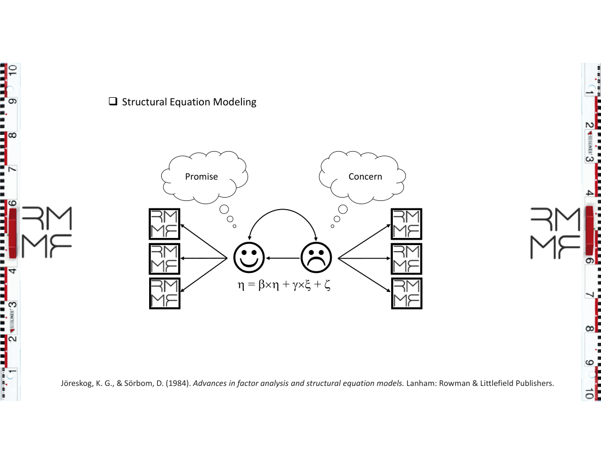
结构方程建模（Structural Equation Modeling）
- 公式/图示标注：
η= β×η+ γ×+ - 概念标签：前景（Promise）、担忧（Concern）
参考文献（References）
Jöreskog, K. G., & Sörbom, D. (1984). Advances in factor analysis and structural equation models. Lanham: Rowman & Littlefield Publishers.
查看英文提取原文
Structural Equation Modeling = + + Promise Concern Jöreskog, K. G., & Sörbom, D. (1984). Advances in factor analysis and structural equation models. Lanham: Rowman & Littlefield Publishers.

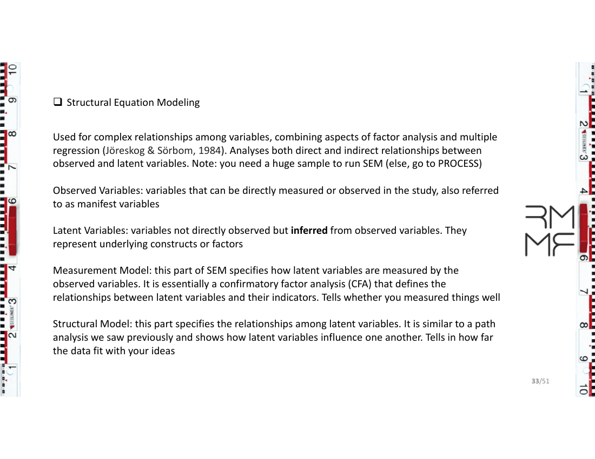
结构方程建模（Structural Equation Modeling）
用于分析变量（variables）之间的复杂关系，结合了因子分析（factor analysis）与多元回归（multiple regression）的特点（Jöreskog & Sörbom, 1984）。分析观测变量（observed variables）与潜变量（latent variables）之间的直接关系（direct relationships）与间接关系（indirect relationships）。
注意（Note）：运行 结构方程建模（SEM） 需要极大的样本（sample）（否则，请改用 PROCESS）。
- 观测变量（Observed Variables）：在研究中可以直接测量或观测到的变量（variables），也称为显变量（manifest variables）
- 潜变量（Latent Variables）：无法被直接观测到，而是从观测变量（observed variables）中推断出来的变量（variables）。它们代表潜在的构念（constructs）或因子（factors）
- 测量模型（Measurement Model）：结构方程建模（SEM） 的这一部分规定了潜变量（latent variables）是如何由观测变量（observed variables）测量的。它本质上是一种验证性因子分析（confirmatory factor analysis, CFA），定义了潜变量（latent variables）与其指标（indicators）之间的关系。它能够说明你是否把事物测量得足够准确
- 结构模型（Structural Model）：这一部分规定了潜变量（latent variables）之间的关系。它类似于我们之前看到的路径分析（path analysis），展示了潜变量（latent variables）之间如何相互影响。它能够说明数据在多大程度上与你的理论构想相吻合
查看英文提取原文
Used for complex relationships among variables, combining aspects of factor analysis and multiple regression (Jöreskog & Sörbom, 1984). Analyses both direct and indirect relationships between observed and latent variables. Note: you need a huge sample to run SEM (else, go to PROCESS) Observed Variables: variables that can be directly measured or observed in the study, also referred to as manifest variables Latent Variables: variables not directly observed but inferred from observed variables. They represent underlying constructs or factors Measurement Model: this part of SEM specifies how latent variables are measured by the observed variables. It is essentially a confirmatory factor analysis (CFA) that defines the relationships between latent variables and their indicators. Tells whether you measured things well Structural Model: this part specifies the relationships among latent variables. It is similar to a path analysis we saw previously and shows how latent variables influence one another. Tells in how far the data fit with your ideas Structural Equation Modeling 33/51

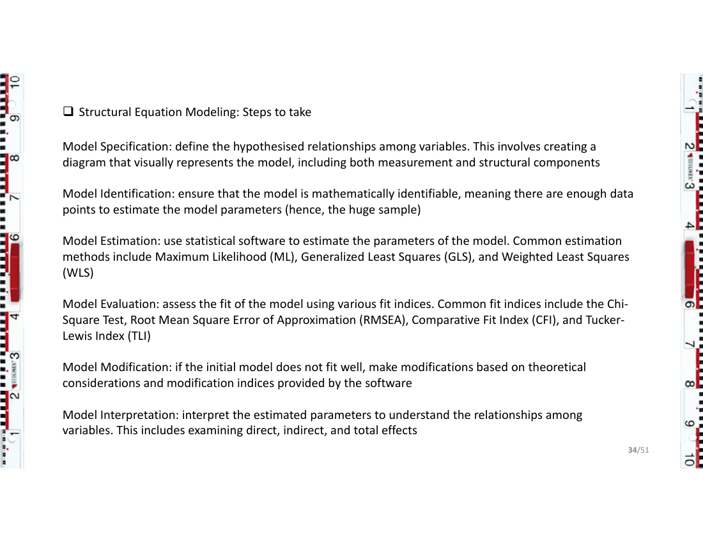
结构方程建模（Structural Equation Modeling）：操作步骤（Steps to take）
- 模型设定（Model Specification）：界定变量（variables）之间所假设的关系。这包括绘制一个图表，以直观呈现模型，涵盖测量成分（measurement components）和结构成分（structural components）
- 模型识别（Model Identification）：确保模型在数学上是可识别的，也就是说有足够的数据点来估计模型参数（model parameters）（因此需要极大的样本（sample））
- 模型估计（Model Estimation）：使用统计软件来估计模型的参数（parameters）。常见的估计方法包括最大似然法（Maximum Likelihood, ML）、广义最小二乘法（Generalized Least Squares, GLS） 以及加权最小二乘法（Weighted Least Squares, WLS）
- 模型评估（Model Evaluation）：使用各种拟合指标（fit indices）来评估模型的拟合度。常见的拟合指标（fit indices）包括卡方检验（Chi-Square Test）、近似均方根误差（Root Mean Square Error of Approximation, RMSEA）、比较拟合指数（Comparative Fit Index, CFI） 以及塔克-刘易斯指数（Tucker-Lewis Index, TLI）
- 模型修正（Model Modification）：如果初始模型拟合不佳，则根据理论考量以及软件提供的修正指数（modification indices）对模型进行修正
- 模型解释（Model Interpretation）：解释估计得到的参数（parameters），以理解变量（variables）之间的关系。这包括考察直接效应（direct effects）、间接效应（indirect effects）与总效应（total effects）
查看英文提取原文
Model Specification: define the hypothesised relationships among variables. This involves creating a diagram that visually represents the model, including both measurement and structural components Model Identification: ensure that the model is mathematically identifiable, meaning there are enough data points to estimate the model parameters (hence, the huge sample) Model Estimation: use statistical software to estimate the parameters of the model. Common estimation methods include Maximum Likelihood (ML), Generalized Least Squares (GLS), and Weighted Least Squares (WLS) Model Evaluation: assess the fit of the model using various fit indices. Common fit indices include the Chi- Square Test, Root Mean Square Error of Approximation (RMSEA), Comparative Fit Index (CFI), and Tucker- Lewis Index (TLI) Model Modification: if the initial model does not fit well, make modifications based on theoretical considerations and modification indices provided by the software Model Interpretation: interpret the estimated parameters to understand the relationships among variables. This includes examining direct, indirect, and total effects Structural Equation Modeling: Steps to take 34/51

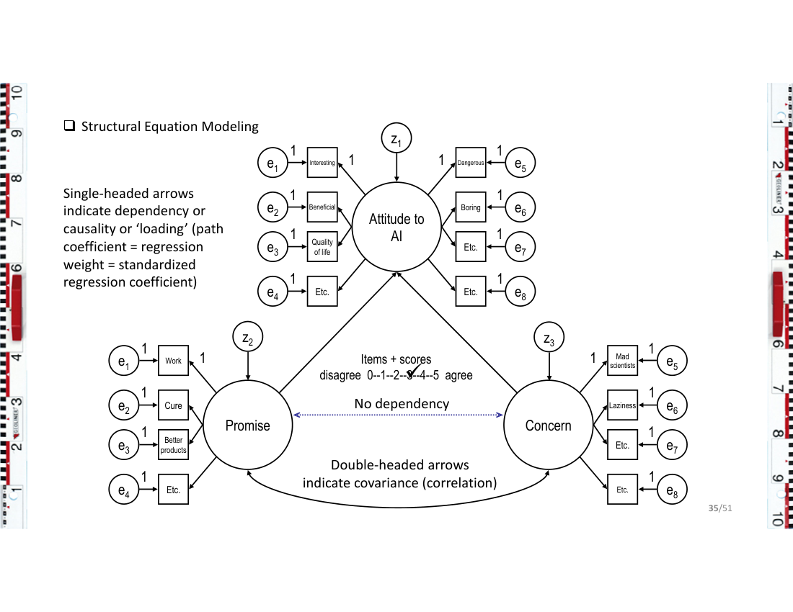
结构方程建模（Structural Equation Modeling）
- 模型结构与变量（variables）标签：
- 核心/上层潜变量（latent variable）：对 AI 的态度（Attitude to AI）；下属/关联潜变量（latent variables）：前景（Promise）、担忧（Concern）；误差项（error terms）/残差（disturbances）：
z1、z2、z3 - 「对 AI 的态度」测量指标（indicators）（附误差项（error terms）
e1–e8及固定权重1）：有益的（Beneficial）、有趣的（Interesting）、生活质量（Quality of life）、等（Etc.）；无聊的（Boring）、危险的（Dangerous）、等（Etc.） - 「前景（Promise）」测量指标（indicators）（附误差项（error terms）
e1–e4及固定权重1）：治愈疾病（Cure）、工作（Work）、更好的产品（Better products）、等（Etc.） - 「担忧（Concern）」测量指标（indicators）（附误差项（error terms）
e5–e8及固定权重1）：懒惰（Laziness）、疯狂科学家（Mad scientists）、等（Etc.） - 题项（Items） + 评分（scores）：不同意（disagree）
0--1--2--3--4--5同意（agree）✓
- 核心/上层潜变量（latent variable）：对 AI 的态度（Attitude to AI）；下属/关联潜变量（latent variables）：前景（Promise）、担忧（Concern）；误差项（error terms）/残差（disturbances）：
- 路径符号说明：
- 单向箭头（Single-headed arrows）表示依赖关系（dependency）、因果关系（causality）或「载荷（loading）」（路径系数（path coefficient） = 回归权重（regression weight） = 标准化回归系数（standardized regression coefficient））
- 双向箭头（Double-headed arrows）表示协方差（covariance）（相关（correlation）），无依赖关系（dependency）（No dependency）
查看英文提取原文
Attitude to AI e2 e4 Beneficial Etc. e1 e3 Interesting Quality of life 1 1 1 1 1 e6 e8 Boring Etc. e5 e7 Dangerous Etc. 1 1 1 1 1 Promise e2 e4 Cure Etc. e1 e3 Work Better products 1 1 1 1 1 Concern e6 e8 Laziness Etc. e5 e7 Mad scientists Etc. 1 1 1 1 1 z1 Items + scores disagree 0--1--2--3--4--5 agree z2 z3 Single-headed arrows indicate dependency or causality or ‘loading’ (path coefficient = regression weight = standardized regression coefficient) Double-headed arrows indicate covariance (correlation) No dependency Structural Equation Modeling 35/51

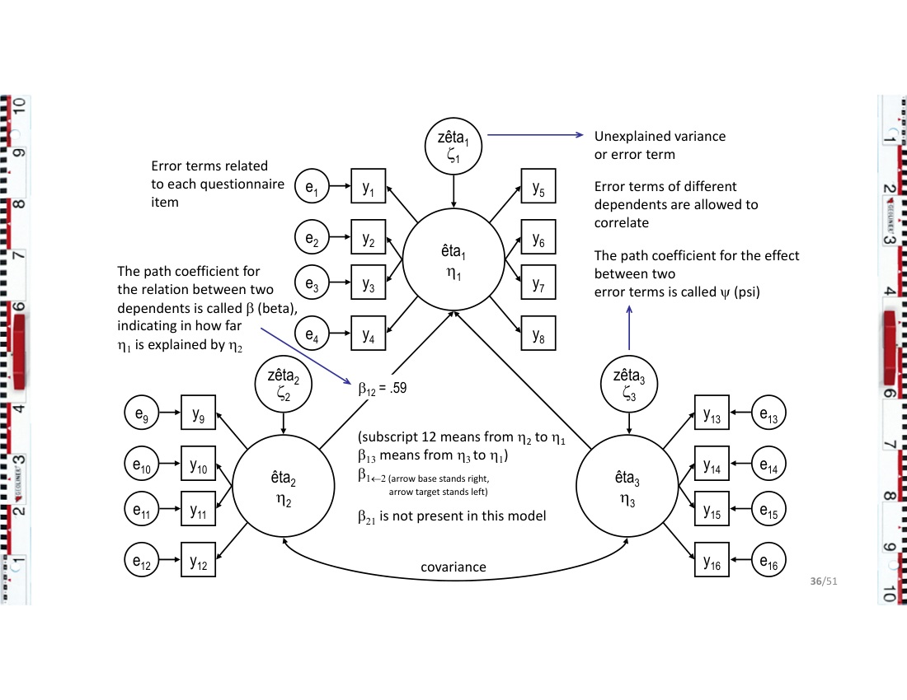
结构方程建模路径图与参数说明
- 潜变量与观测指标标注：
êta1（η1）、êta2（η2）、êta3（η3）y1、y2、y3、y4、y5、y6、y7、y8、y9、y10、y11、y12、y13、y14、y15、y16zêta1（1）、zêta2（2）、zêta3（3）- 误差项：
e1、e2、e3、e4、e9、e10、e11、e12、e13、e14、e15、e16
- 图示说明：
- 协方差（covariance）
- 与每个问卷题项（questionnaire item）相关的误差项（Error terms）
- 未解释变异（Unexplained variance）或误差项（error term）
- 不同因变量（dependents）的误差项（Error terms）允许彼此相关（correlate）
- 两个误差项（error terms）之间效应（effect）的路径系数（path coefficient）称为 ψ（psi）（psi）
- 两个因变量（dependents）之间关系的路径系数（path coefficient）称为 β（beta）（β(beta)），表示 η1 在多大程度上被 η2 解释
- β12 = .59（下标 12 表示从 η2 指向 η1；β13 表示从 η3 指向 η1）
- β12（箭尾在右，箭头在左）
- β21 在该模型（model）中不存在
查看英文提取原文
êta1 1 y1 y2 y3 y4 y5 y6 y7 y8 y9 y10 y11 y12 y13 y14 y15 y16 zêta1 1 covariance e2 e4 e1 e3 e10 e12 e9 e11 e14 e16 e13 e15 Error terms related to each questionnaire item êta2 2 êta3 3 zêta2 2 zêta3 3 Unexplained variance or error term Error terms of different dependents are allowed to correlate The path coefficient for the effect between two error terms is called (psi) The path coefficient for the relation between two dependents is called (beta), indicating in how far 1 is explained by 2 12 = .59 (subscript 12 means from 2 to 1 13 means from 3to 1) 12 (arrow base stands right, arrow target stands left) 21 is not present in this model 36/51

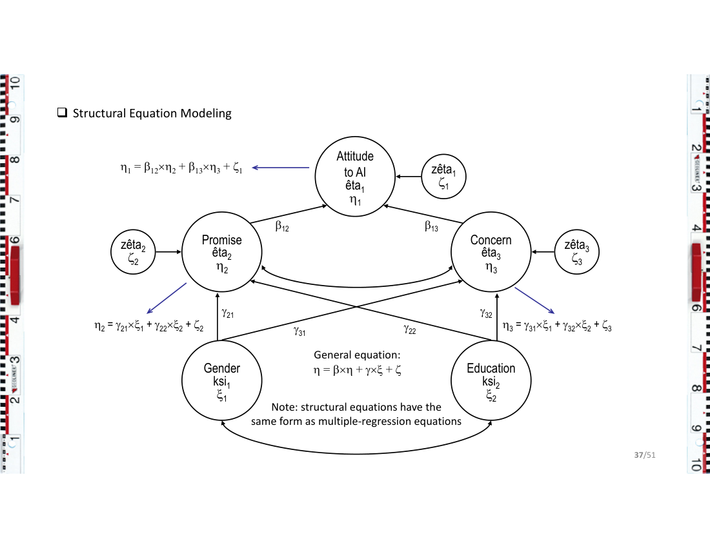
结构方程建模（Structural Equation Modeling）
- 模型变量与路径标签：
- 对 AI 的态度（Attitude to AI）：
êta1（η1），残差zêta1（1） - 性别（Gender）：
ksi1（1） - 教育程度（Education）：
ksi2（2） - 前景期许（Promise）：
êta2（η2），残差zêta2（2） - 担忧（Concern）：
êta3（η3），残差zêta3（3） - 路径系数：γ21、γ31、γ22、γ32、β12、β13
- 对 AI 的态度（Attitude to AI）：
- 结构方程：
- η1 = β12 × η2 + β13 × η3 + 1
- η2 = γ21 × 1 + γ22 × 2 + 2
- η3 = γ31 × 1 + γ32 × 2 + 3
注（Note）：结构方程（structural equations）与多元回归方程（multiple-regression equations）具有相同的形式
- 一般方程（General equation）：
- η = β × η + γ × +
查看英文提取原文
Attitude to AI êta1 1 Gender ksi1 1 Education ksi2 2 Promise êta2 2 Concern êta3 3 zêta1 1 zêta2 2 zêta3 3 21 31 22 32 12 13 1 = 122 + 133 + 1 2 = 211 + 222 + 2 3 = 311 + 322 + 3 Note: structural equations have the same form as multiple-regression equations General equation: = + + Structural Equation Modeling 37/51

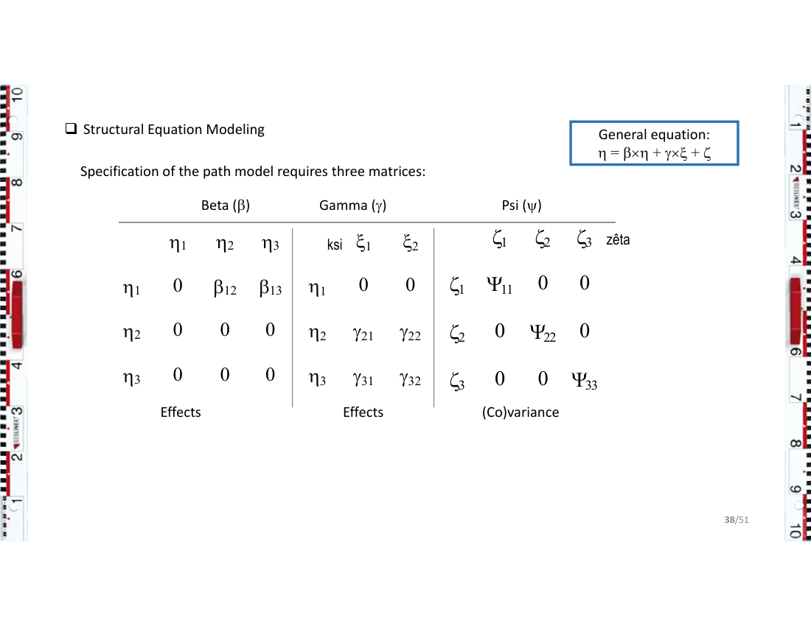
结构方程建模（Structural Equation Modeling）
路径模型（path model）的模型设定（Specification）需要三个矩阵：
- Beta (β) —— 效应（Effects）（Beta 矩阵（Beta (β)））
| η1 | η2 | η3 | |
|---|---|---|---|
| η1 | 0 | β12 | β13 |
| η2 | 0 | 0 | 0 |
| η3 | 0 | 0 | 0 |
- Gamma (γ) —— 效应（Effects）（Gamma 矩阵（Gamma (γ)）；列对应 ksi：1、2）
| 1 | 2 | |
|---|---|---|
| η1 | 0 | 0 |
| η2 | γ21 | γ22 |
| η3 | γ31 | γ32 |
- Psi () —— （协）方差（(Co)variance）（Psi 矩阵（Psi）；行与列对应 zêta：1、2、3）
| 1 | 2 | 3 | |
|---|---|---|---|
| 1 | 11 | 0 | 0 |
| 2 | 0 | 22 | 0 |
| 3 | 0 | 0 | 33 |
- 一般方程（General equation）：
- η = β × η + γ × +
查看英文提取原文
1 2 3 1 0 12 13 2 0 0 0 3 0 0 0 1 2 1 0 0 2 21 22 3 31 32 1 2 3 1 11 0 0 2 0 22 0 3 0 0 33 General equation: = + + Specification of the path model requires three matrices: Effects Effects (Co)variance Beta () Gamma () Psi () Structural Equation Modeling 38/51 zêta ksi

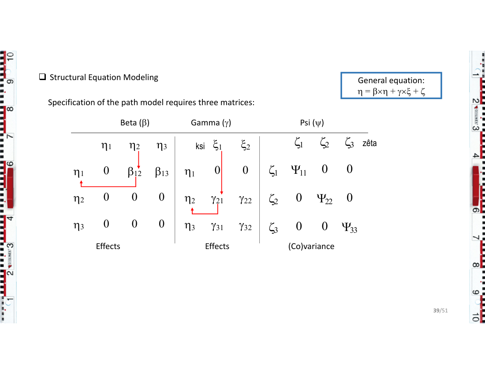
结构方程建模（Structural Equation Modeling）
路径模型（path model）的模型设定（Specification）需要三个矩阵：
- Beta (β) —— 效应（Effects）（Beta 矩阵（Beta (β)））
| η1 | η2 | η3 | |
|---|---|---|---|
| η1 | 0 | β12 | β13 |
| η2 | 0 | 0 | 0 |
| η3 | 0 | 0 | 0 |
- Gamma (γ) —— 效应（Effects）（Gamma 矩阵（Gamma (γ)）；列对应 ksi：1、2）
| 1 | 2 | |
|---|---|---|
| η1 | 0 | 0 |
| η2 | γ21 | γ22 |
| η3 | γ31 | γ32 |
- Psi () —— （协）方差（(Co)variance）（Psi 矩阵（Psi）；行与列对应 zêta：1、2、3）
| 1 | 2 | 3 | |
|---|---|---|---|
| 1 | 11 | 0 | 0 |
| 2 | 0 | 22 | 0 |
| 3 | 0 | 0 | 33 |
- 一般方程（General equation）：
- η = β × η + γ × +
查看英文提取原文
1 2 3 1 0 12 13 2 0 0 0 3 0 0 0 1 2 1 0 0 2 21 22 3 31 32 1 2 3 1 11 0 0 2 0 22 0 3 0 0 33 General equation: = + + Specification of the path model requires three matrices: Effects Effects (Co)variance Beta () Gamma () Psi () Structural Equation Modeling 39/51 ksi zêta

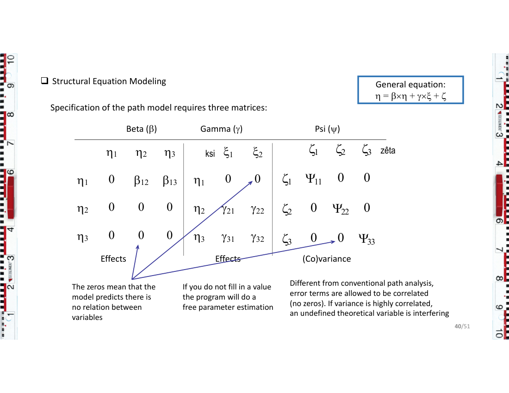
结构方程建模（Structural Equation Modeling）
路径模型（path model）的模型设定（Specification）需要三个矩阵：
- Beta (β) —— 效应（Effects）（Beta 矩阵（Beta (β)））
| η1 | η2 | η3 | |
|---|---|---|---|
| η1 | 0 | β12 | β13 |
| η2 | 0 | 0 | 0 |
| η3 | 0 | 0 | 0 |
- Gamma (γ) —— 效应（Effects）（Gamma 矩阵（Gamma (γ)）；列对应 ksi：1、2）
| 1 | 2 | |
|---|---|---|
| η1 | 0 | 0 |
| η2 | γ21 | γ22 |
| η3 | γ31 | γ32 |
- Psi () —— （协）方差（(Co)variance）（Psi 矩阵（Psi）；行与列对应 zêta：1、2、3）
| 1 | 2 | 3 | |
|---|---|---|---|
| 1 | 11 | 0 | 0 |
| 2 | 0 | 22 | 0 |
| 3 | 0 | 0 | 33 |
- 一般方程（General equation）：
- η = β × η + γ × +
- 矩阵注释：
- 其中的 0 表示该模型（model）预测变量（variables）之间没有关系
- 如果你没有填入数值，程序将会执行自由参数估计（free parameter estimation）
- 与传统的路径分析（path analysis）不同，误差项（error terms）允许彼此相关（correlated）（非零）。如果方差（variance）高度相关（correlated），说明有一个未界定的理论变量（theoretical variable）正在产生干扰
查看英文提取原文
1 2 3 1 0 12 13 2 0 0 0 3 0 0 0 1 2 1 0 0 2 21 22 3 31 32 1 2 3 1 11 0 0 2 0 22 0 3 0 0 33 General equation: = + + Specification of the path model requires three matrices: Effects Effects (Co)variance Beta () Gamma () Psi () The zeros mean that the model predicts there is no relation between variables If you do not fill in a value the program will do a free parameter estimation Different from conventional path analysis, error terms are allowed to be correlated (no zeros). If variance is highly correlated, an undefined theoretical variable is interfering Structural Equation Modeling 40/51 ksi zêta

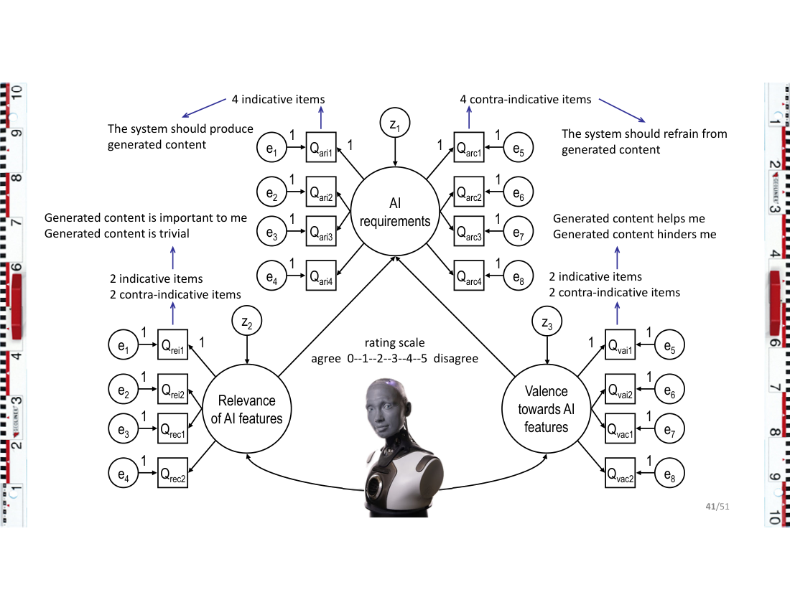
量表结构与题项示例（AI 需求、AI 功能相关性与效价）
- AI 需求（AI requirements）（残差
z1）- 题项与误差项：
Qari1–Qari4（对应e1–e4，载荷标注为1）、Qarc1–Qarc4（对应e5–e8，载荷标注为1） - 4 个指示题项（indicative items）：系统应当生成内容（The system should produce generated content）
- 4 个反指示题项（contra-indicative items）：系统应当避免生成内容（The system should refrain from generated content）
- 题项与误差项：
- AI 功能的相关性（Relevance of AI features）（残差
z2）- 题项与误差项：
Qrei1、Qrei2、Qrec1、Qrec2（对应e1–e4，载荷标注为1） - 2 个指示题项（indicative items）：生成的内容对我很重要（Generated content is important to me）
- 2 个反指示题项（contra-indicative items）：生成的内容微不足道（Generated content is trivial）
- 题项与误差项：
- 对 AI 功能的效价（Valence towards AI features）（残差
z3）- 题项与误差项：
Qvai1、Qvai2、Qvac1、Qvac2（对应e5–e8，载荷标注为1） - 2 个指示题项（indicative items）：生成的内容对我有帮助（Generated content helps me）
- 2 个反指示题项（contra-indicative items）：生成的内容会妨碍我（Generated content hinders me）
- 题项与误差项：
- 评分量表（rating scale）
- 同意（agree）
0--1--2--3--4--5不同意（disagree）
- 同意（agree）
查看英文提取原文
AI requirements e2 e4 Qari2 Qari4 e1 e3 Qari1 Qari3 1 1 1 1 1 e6 e8 Qarc2 Qarc4 e5 e7 Qarc1 Qarc3 1 1 1 1 1 Relevance of AI features e2 e4 Qrei2 Qrec2 e1 e3 Qrei1 Qrec1 1 1 1 1 1 Valence towards AI features e6 e8 Qvai2 Qvac2 e5 e7 Qvai1 Qvac1 1 1 1 1 1 z1 2 indicative items 2 contra-indicative items 2 indicative items 2 contra-indicative items Generated content is important to me Generated content is trivial Generated content helps me Generated content hinders me 4 indicative items 4 contra-indicative items The system should produce generated content The system should refrain from generated content rating scale agree 0--1--2--3--4--5 disagree z2 z3 41/51

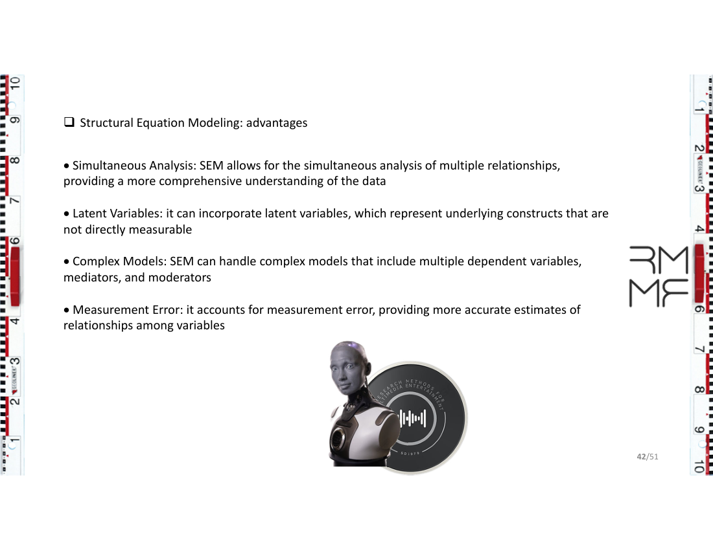
结构方程建模（Structural Equation Modeling）：优势
- 同步分析（Simultaneous Analysis）：结构方程建模（SEM） 允许同时分析多重关系，从而对数据提供更全面的理解
- 潜变量（Latent Variables）：它可以纳入潜变量（latent variables），用以表征无法直接测量的潜在构念（constructs）
- 复杂模型（Complex Models）：结构方程建模（SEM） 能够处理包含多个因变量（dependent variables）、中介变量（mediators）和调节变量（moderators）的复杂模型（complex models）
- 测量误差（Measurement Error）：它会将测量误差（measurement error）纳入考量，从而对变量（variables）之间关系的估计值（estimates）提供更准确的结果
查看英文提取原文
Simultaneous Analysis: SEM allows for the simultaneous analysis of multiple relationships, providing a more comprehensive understanding of the data Latent Variables: it can incorporate latent variables, which represent underlying constructs that are not directly measurable Complex Models: SEM can handle complex models that include multiple dependent variables, mediators, and moderators Measurement Error: it accounts for measurement error, providing more accurate estimates of relationships among variables Structural Equation Modeling: advantages 42/51

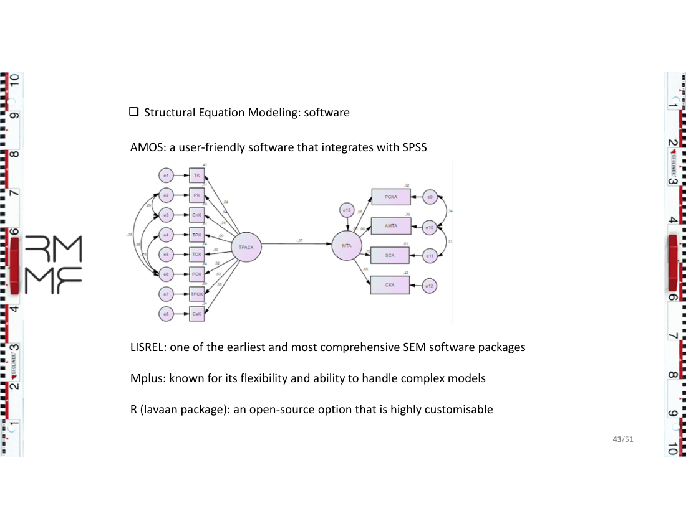
结构方程建模（Structural Equation Modeling）：软件
AMOS：一款界面友好、可与SPSS集成的软件LISREL：最早且最全面的 结构方程建模（SEM） 软件包之一Mplus：以灵活性强及能够处理复杂模型（complex models）而著称R（lavaan包）：一种高度可定制的开源选择
查看英文提取原文
AMOS: a user-friendly software that integrates with SPSS LISREL: one of the earliest and most comprehensive SEM software packages Mplus: known for its flexibility and ability to handle complex models R (lavaan package): an open-source option that is highly customisable Structural Equation Modeling: software 43/51

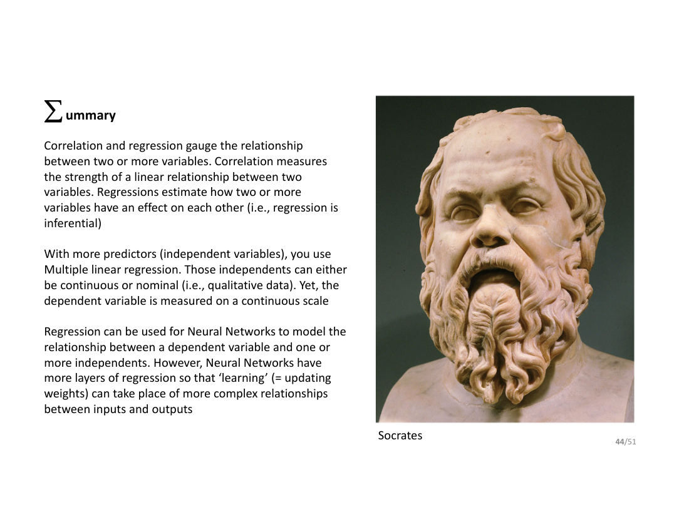
总结（∑ummary）
- 相关（Correlation）与回归（regression）用于衡量两个或多个变量（variables）之间的关系。相关（Correlation）衡量两个变量（variables）之间线性关系（linear relationship）的强度；回归（Regressions）则估计两个或多个变量（variables）如何相互产生影响（即回归具有推断性的（inferential）性质）。
- 当存在更多预测变量（predictors）（自变量（independent variables））时，可使用多元线性回归（Multiple linear regression）。这些自变量（independents）既可以是连续（continuous）的，也可以是称名（nominal）的（即质性数据（qualitative data））；然而，因变量（dependent variable）是在连续尺度（continuous scale）上测量的。
- 回归（Regression）可用于神经网络（Neural Networks），以对一个因变量（dependent variable）与一个或多个自变量（independents）之间的关系进行建模。不过，神经网络（Neural Networks）包含更多层的回归（regression），从而能够对输入与输出之间更复杂的关系进行「学习」（即更新权重（weights））。
（Socrates）
查看英文提取原文
ummary Correlation and regression gauge the relationship between two or more variables. Correlation measures the strength of a linear relationship between two variables. Regressions estimate how two or more variables have an effect on each other (i.e., regression is inferential) With more predictors (independent variables), you use Multiple linear regression. Those independents can either be continuous or nominal (i.e., qualitative data). Yet, the dependent variable is measured on a continuous scale Regression can be used for Neural Networks to model the relationship between a dependent variable and one or more independents. However, Neural Networks have more layers of regression so that ‘learning’ (= updating weights) can take place of more complex relationships between inputs and outputs Socrates 44/51

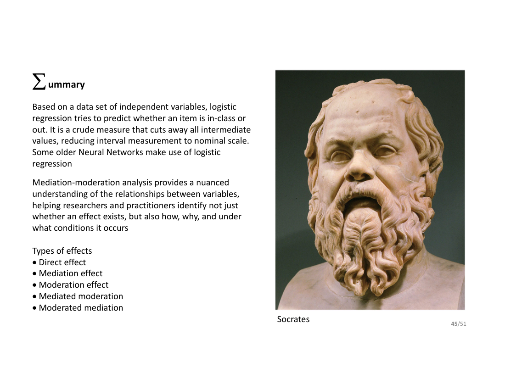
总结（∑ummary）
- 基于一组自变量（independent variables）的数据集，逻辑回归（logistic regression）试图预测某一条目属于类别之内还是之外。它是一种较为粗略的度量方法，会裁切掉所有中间数值，将定距测量（interval measurement）降维为定类尺度（nominal scale）。一些早期的神经网络（Neural Networks）使用了逻辑回归（logistic regression）。
- 中介—调节分析（Mediation-moderation analysis）能够对变量（variables）之间的关系提供细致入微的理解，帮助研究者与实践者不仅识别某一效应（effect）是否存在，还能识别它是如何发生、为何发生以及在何种条件下发生的。
效应（effect）的类型（Types of effects）
- 直接效应（Direct effect）
- 中介效应（Mediation effect）
- 调节效应（Moderation effect）
- 有中介的调节（Mediated moderation）
- 有调节的中介（Moderated mediation）
（Socrates）
查看英文提取原文
ummary Based on a data set of independent variables, logistic regression tries to predict whether an item is in-class or out. It is a crude measure that cuts away all intermediate values, reducing interval measurement to nominal scale. Some older Neural Networks make use of logistic regression Mediation-moderation analysis provides a nuanced understanding of the relationships between variables, helping researchers and practitioners identify not just whether an effect exists, but also how, why, and under what conditions it occurs Types of effects Direct effect Mediation effect Moderation effect Mediated moderation Moderated mediation Socrates 45/51

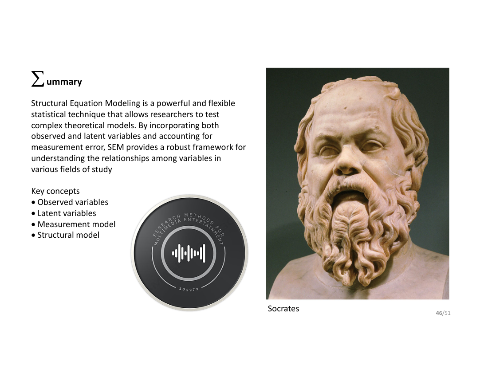
总结（∑ummary）
- 结构方程建模（Structural Equation Modeling） 是一种强大且灵活的统计技术，允许研究者检验复杂的理论模型（theoretical models）。通过同时纳入观测变量（observed）和潜变量（latent variables），并将测量误差（measurement error）纳入考量，结构方程建模（SEM） 为理解不同研究领域中变量（variables）之间的关系提供了一个稳健的框架。
核心概念（Key concepts）
- 观测变量（Observed variables）
- 潜变量（Latent variables）
- 测量模型（Measurement model）
- 结构模型（Structural model）
（Socrates）
查看英文提取原文
ummary Structural Equation Modeling is a powerful and flexible statistical technique that allows researchers to test complex theoretical models. By incorporating both observed and latent variables and accounting for measurement error, SEM provides a robust framework for understanding the relationships among variables in various fields of study Key concepts Observed variables Latent variables Measurement model Structural model Socrates 46/51

考试样题（Exam Sample Item）
类别：「洞察（Insight）」
本题对应第 08 讲：（多元）回归（(Multiple) regression）。相关（correlation）不等于因果关系（causation），那么线性回归（linear regression）呢？在线性回归（linear regression）中，「因变量（dependent）与自变量（independent variable）之间的相关（correlation）源于因果关系（causation）」这一说法是否正确？
A. 不正确。在满足恰当条件的情况下，从相关（correlation）推论因果或许是合理的；否则，这就是一种谬误推理（fallacious inference）
B. 正确。因变量（dependent variable）的变化是根据自变量（independent variable）的变化来预测并加以检验的
C. 正确。通过运用可废止推理（defeasible reasoning），可以基于相关数据（correlational data）提出归纳论证（inductive arguments）
D. 不正确。回归（Regression）应当将测量误差（measurement error）纳入考量，从而对变量（variables）之间关系的估计值（estimates）提供更准确的结果
查看英文提取原文
Exam Sample Item Category “Insight“ This item is about Lecture 08: (Multiple) regression. A correlation is not causation but how about linear regression? In linear regression, is the statement correct that correlation between dependent and independent variable comes from causation? A No. Arguing from correlation to cause may be reasonable under the correct conditions; otherwise, it is a fallacious inference B Yes. Changes in the dependent variable are predicted from and tested against changes in the independent variable C Yes, by employing defeasible reasoning, inductive arguments can be raised based on correlational data D No. Regression should account for measurement error, providing more accurate estimates of relationships among variables 47/51

考试样题（Exam Sample Item）
类别：“洞察（Insight）”
本题涉及第 08 讲：（多元）回归（(Multiple) regression）。相关（correlation）不等于因果关系（causation），但线性回归（linear regression）呢？在线性回归（linear regression）中，“因变量（dependent variable）与自变量（independent variable）之间的相关（correlation）源于因果关系（causation）”这一说法是否正确？
A. 不正确。在恰当的条件下，从相关（correlation）推论到原因（cause）可能是合理的；否则，这便是一种谬误推理（fallacious inference）
B. 正确。因变量（dependent variable）的变化是根据自变量（independent variable）的变化进行预测并加以检验的
C. 正确。通过运用可废止推理（defeasible reasoning），可以基于相关数据（correlational data）提出归纳论证（inductive arguments）
D. 不正确。回归（Regression）应当考虑测量误差（measurement error），从而为变量（variables）之间的关系提供更准确的估计（estimates）
查看英文提取原文
Exam Sample Item Category “Insight“ This item is about Lecture 08: (Multiple) regression. A correlation is not causation but how about linear regression? In linear regression, is the statement correct that correlation between dependent and independent variable comes from causation? A No. Arguing from correlation to cause may be reasonable under the correct conditions; otherwise, it is a fallacious inference B Yes. Changes in the dependent variable are predicted from and tested against changes in the independent variable C Yes, by employing defeasible reasoning, inductive arguments can be raised based on correlational data D No. Regression should account for measurement error, providing more accurate estimates of relationships among variables 48/51

考试样题（Exam Sample Item）
类别：“洞察（Insight）”
在第 08 讲：（多元）回归（(Multiple) regression）中，我们讨论了由 Jöreskog 和 Sörbom（1984）提出的结构方程建模（Structural Equation Modeling）。结构方程建模（SEM）可以从可直接测量的问卷题项（questionnaire items）（此处为 y9, …, 12）中推断出作为潜在构念（underlying constructs）的潜变量（latent variables）（例如 êta2）。通过从结果（effects）（题项得分（item scores））推论原因（cause）（潜变量（latent variable）），结构方程建模（SEM）是否依赖于肯定后件谬误（ex-consequentia fallacy）？
A. 是的。由 X → Y 不能推出 Y → X
B. 不是。由 Y → X 不能推出 X → Y
C. 不是。潜变量（latent variable）是根据可观测变量（observables）预测出来并随后加以检验的，同时允许保留一定幅度的未解释方差（unexplained variance）（zêta2）
D. 是的。由于存在测量误差（error in measurement）（e9, …, 12），人们无法确定题项 y9, …, 12 来自 êta2
查看英文提取原文
Exam Sample Item Category “Insight“ In Lecture 08: (Multiple) regression, we discussed Structural Equation Modeling developed by Jöreskog and Sörbom (1984). SEM can infer latent variables (e.g., êta2) as underlying constructs from the directly measurable questionnaire items (here, y9, …, 12). Does SEM rely on an ex-consequentia fallacy by inferring the cause (latent variable) from the effects (item scores)? A Yes. From X Y does not follow Y X B No. From Y X does not follow X Y C No. The latent variable is predicted from observables and then tested, allowing for a margin of unexplained variance (zêta2) D Yes. Because of the error in measurement (e9, …, 12), one cannot be sure that items y9, …, 12 come from êta2 49/51

考试样题（Exam Sample Item）
类别：“洞察（Insight）”
在第 08 讲：（多元）回归（(Multiple) regression）中，我们讨论了由 Jöreskog 和 Sörbom（1984）提出的结构方程建模（Structural Equation Modeling）。结构方程建模（SEM）可以从可直接测量的问卷题项（questionnaire items）（此处为 y9, …, 12）中推断出作为潜在构念（underlying constructs）的潜变量（latent variables）（例如 êta2）。通过从结果（effects）（题项得分（item scores））推论原因（cause）（潜变量（latent variable）），结构方程建模（SEM）是否依赖于肯定后件谬误（ex-consequentia fallacy）？
A. 是的。由 X → Y 不能推出 Y → X
B. 不是。由 Y → X 不能推出 X → Y
C. 不是。潜变量（latent variable）是根据可观测变量（observables）预测出来并随后加以检验的，同时允许保留一定幅度的未解释方差（unexplained variance）（zêta2）
D. 是的。由于存在测量误差（error in measurement）（e9, …, 12），人们无法确定题项 y9, …, 12 来自 êta2
查看英文提取原文
Exam Sample Item Category “Insight“ In Lecture 08: (Multiple) regression, we discussed Structural Equation Modeling developed by Jöreskog and Sörbom (1984). SEM can infer latent variables (e.g., êta2) as underlying constructs from the directly measurable questionnaire items (here, y9, …, 12). Does SEM rely on an ex-consequentia fallacy by inferring the cause (latent variable) from the effects (item scores)? A Yes. From X Y does not follow Y X B No. From Y X does not follow X Y C No. The latent variable is predicted from observables and then tested, allowing for a margin of unexplained variance (zêta2) D Yes. Because of the error in measurement (e9, …, 12), one cannot be sure that items y9, …, 12 come from êta2 50/51

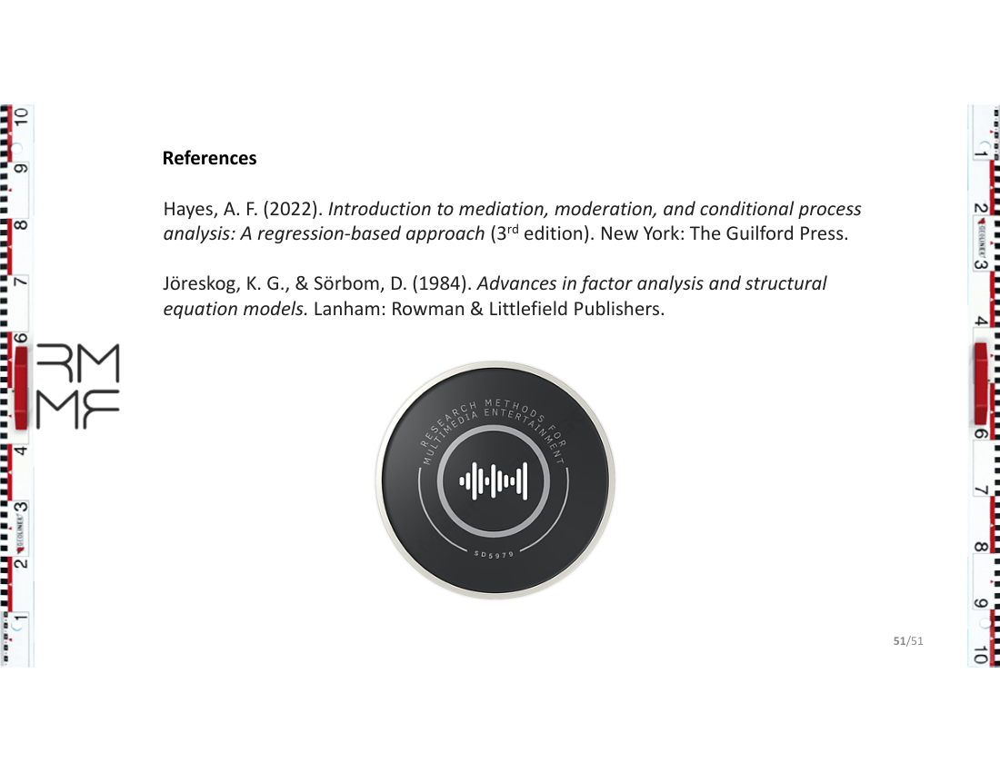
参考文献（References）
- Hayes, A. F. (2022). Introduction to mediation, moderation, and conditional process analysis: A regression-based approach (3rd edition). New York: The Guilford Press.
- Jöreskog, K. G., & Sörbom, D. (1984). Advances in factor analysis and structural equation models. Lanham: Rowman & Littlefield Publishers.
查看英文提取原文
References Hayes, A. F. (2022). Introduction to mediation, moderation, and conditional process analysis: A regression-based approach (3rd edition). New York: The Guilford Press. Jöreskog, K. G., & Sörbom, D. (1984). Advances in factor analysis and structural equation models. Lanham: Rowman & Littlefield Publishers. 51/51